SISTEMA DE PLANIFICACIÓN DE
ACTIVIDADES
Manual de usuario
Mayo 2012
Versión 1.1
INFORMACIÓN PARA USUARIOS DE LA
DOCUMENTACIÓN
El presente documento
es el manual de usuario del Sistema de Planificación de Actividades. El mismo contiene
un glosario de términos ordenados alfabéticamente el cual incluye todos
aquellos términos que son relevantes en el tema de la Planificación de
actividades, difíciles de interpretar o poco conocidos. Está estructurado en
dos capítulos:
Capítulo 1: Funcionalidades del sistema. Este capítulo es una guía de cómo
trabajar con el sistema a partir de la descripción de cada una de las
funcionalidades que este brinda.
Capítulo 2: Tratamiento de errores. A través de este capítulo usted aprenderá
las acciones que deberá tomar ante la ocurrencia de algún error.
FUNCIONALIDADES DEL SISTEMA.. 6
1.1.1..... Grupos de usuarios por rol
1.2.3..... Objetivos y criterios de medida
1.2.6..... Calendario de actividades
1.3........ Recuperaciones del sistema
Actividades: conjunto de operaciones o tareas, propias de una persona o entidad,
destinadas para cumplir determinado(s) objetivo(s).
Acuerdo: decisión tomada en común por dos o más personas, por una junta o asamblea.
También se denomina así a una resolución de organizaciones, instituciones,
empresas.
Área de
Resultados Clave (ARC): término empleado para definir un resultado cuyo logro implica la
participación de dos o más elementos (departamento, dirección, grupo de
trabajo, etc.) de la estructura funcional de una entidad. Tal logro es esencial
para que la organización cumpla su misión.
Categoría de la
actividad: elemento de clasificación para el ordenamiento de las actividades con el
fin de mejorar su organización y control.
Criterio de
medida: parámetro establecido para cuantificar tangiblemente las metas concretas
derivadas de un objetivo y así poder medir o evaluar su grado/nivel de
cumplimiento en determinados momentos.
Desviación: significa la revelación -como
resultado lógico de una comparación entre un estado deseado
(planificado) y un estado real (producto de la implementación de lo
planificado)- de la no correspondencia entre el estado real y deseado, con la
finalidad de emprender acciones de regulación para mantener el sistema o
proceso dentro de los parámetros planificados.
Entidad: colectividad considerada como unidad, especialmente, cualquier
corporación, compañía, institución, etc. En el campo de la planificación se
aborda genéricamente como organización; referida a los disímiles grupos humanos
conformados para cumplir sus correspondientes objetivos explícitos e
implícitos.
Factores que Intervienen en la Planificación (FIP): documento que contiene elementos que desencadenan cambios en los planes,
el mismo es emitido por el nivel superior o propio.
Plan: modelo sistemático que se elabora antes de realizar una acción, con el
propósito de dirigirla y encausarla. En
este sentido, un plan también es un documento que precisa los detalles
necesarios para realizar una misión.
Planificación: acciones llevadas a cabo para realizar planes y proyectos de diferentes
índole. La planificación ejecuta los planes desde su concepción y si es el
caso, se encarga de la operación en los diferentes niveles y amplitudes de la
planeación.
Planificar: acción de crear o proyectar metas donde se interrelacionan los factores
tiempo, espacio, recursos y personas.
______________________________________________________________________________________________________________________________
El Sistema de Planificación de Actividades (SIPAC) forma parte del
paquete de soluciones integrales de gestión CEDRUX para las entidades
presupuestadas y empresariales, el cual está basado en los principios de
independencia tecnológica y con funcionalidades generales de los procesos y las
particularidades de la economía cubana al igual. Esta solución informática ha
sido desarrollada por estudiantes, profesores y especialistas de diversos
organismos y entidades del país en la Infraestructura Productiva de la
Universidad de las Ciencias Informáticas. Sus características funcionales
fueron diseñadas de acuerdo con las políticas emitidas por los organismos
rectores del Estado Cubano.
El sistema pone al servicio de su entidad las potencialidades de la
tecnología informática y provee facilidades para la integración de las
diferentes áreas productivas y departamentos administrativos.
______________________________________________________________________________________________________________________________
Las funcionalidades
del Sistema de Planificación de Actividades están agrupadas en cuatro módulos
integradores. Estos son Configuración, Planeación, Recuperaciones y
Notificaciones.
El módulo
Configuración contiene las funcionalidades para el trabajo con las configuraciones
de grupos de usuarios por rol y permisos, además de los nomencladores:
categoría del plan, unidad de medida del criterio, categoría de la actividad,
tipo de actividad, categoría del FIP (factores que intervienen en la
planificación), datos de procedencia del FIP y nivel de acceso al FIP.
El módulo
Planeación contiene las operaciones a realizar con los elementos de la
planificación, entiéndase: planes, áreas de resultados clave, objetivos,
actividades y FIP. Este módulo incluye un calendario de actividades que ofrece
una vista gráfica de las actividades registradas en el sistema siendo posible
modificar las ya existentes o gestionar nuevas actividades.
El módulo
Recuperaciones abarca una serie de reportes concebidos para efectuar análisis
de la planificación en un periodo o en un rango de fecha determinado.
Y por
último el módulo Notificaciones mediante el cual es posible generar además de
las notificaciones, a partir de determinadas acciones que se realizan sobre los diferentes
elementos, los reportes de acciones realizadas sobre elementos a los cuales el
usuario tiene acceso.
A continuación se hará
una descripción detallada sobre cómo realizar cada una de las funcionalidades
en la aplicación.
La
figura 1 muestra el primer ambiente de trabajo del sistema. Haga clic en el
botón Inicio y se desplegará un menú en el cual debe colocar el puntero en el
subsistema donde desee trabajar.
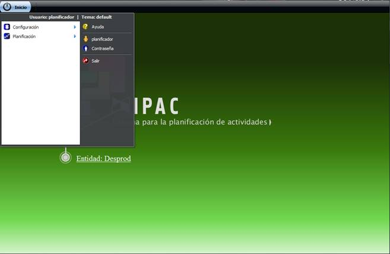
Figura 1. Primer ambiente de
trabajo
Para acceder a las funcionalidades propias del sistema debe escoger
inicialmente la opción Planificación y luego SIPAC como se muestra en la figura
2, donde además se muestran las funcionalidades del sistema agrupadas por
módulos.
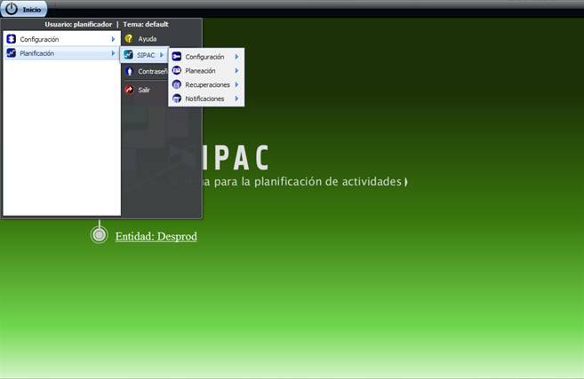
Figura 2. Menú Planificación de
actividades y funcionalidades
______________________________________________________________________________________________________________________________
El modo de
acceso a las operaciones que integra el módulo Configuración se muestra en la
figura 3.
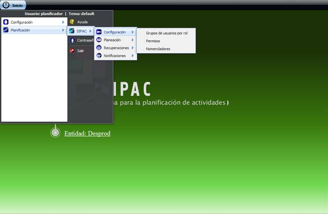
Figura 3. Modo de acceso al
módulo Configuración
______________________________________________________________________________________________________________________________
1.1.1. Grupos
de usuarios por rol
Una vez seleccionado en el menú de Configuración la opción Grupos de
usuarios por rol, se muestra la interfaz
correspondiente.
A las operaciones que se
realizan con grupos de usuarios se pueden acceder desde la parte superior de la
interfaz. Dichas operaciones están señaladas con números en la figura 4
mostrándose el orden y la posición que ocupa cada uno de los botones que
permiten realizar las funcionalidades.
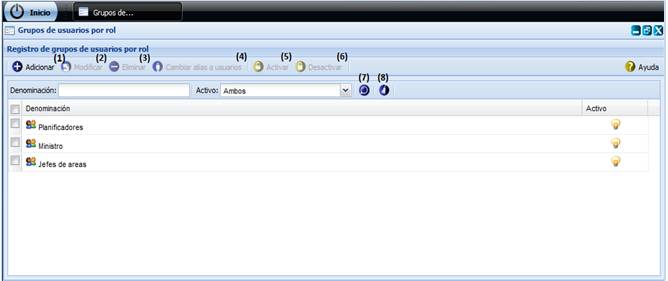
Figura 4. Operaciones con grupos
de usuarios por rol
1.
Adicionar:
Mediante el
botón Adicionar se puede ejecutar la
siguiente operación:
Crear un Grupo de usuarios por rol.
En
la interfaz Gestionar grupos de usuarios por rol se muestra activado el botón Adicionar.
Usted podrá dar clic en el botón Adicionar
y se mostrará la interfaz Adicionar grupo de usuarios por rol como se muestra
en las figuras 5 y 6, la cual permite adicionar los datos de los grupos de
usuarios.
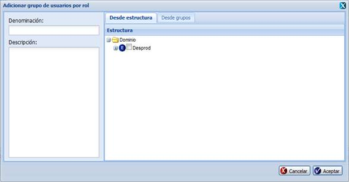
Figura 5. Operación Adicionar
grupo de usuarios por rol desde estructuras
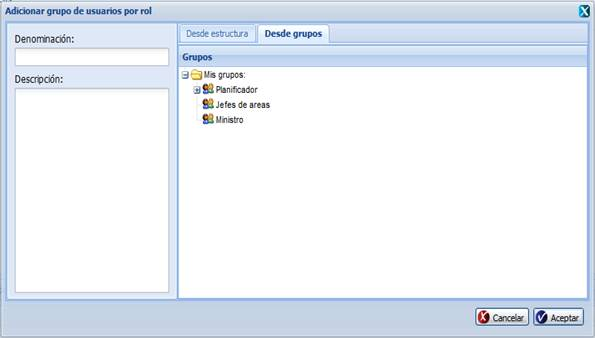
Figura 6. Operación Adicionar
grupo de usuarios por rol desde grupos
Para
adicionar un grupo de usuarios usted debe introducir en el panel de la
izquierda la denominación y en caso de desearlo una breve descripción del
mismo. El sistema le permite seleccionar usuarios u otros grupos de usuarios
para incluirlos en el grupo de usuarios que está adicionando. Lo anterior tiene
dos vías para realizarse, para lo cual el sistema está provisto de dos pestañas
en el panel derecho de la interfaz. En la primera pestaña (Desde estructura),
se puede realizar la selección desde algún nivel de la estructura definida en
el sistema y en la segunda pestaña (Desde grupos) se puede realizar la
selección desde grupos de usuarios previamente creados.
La
denominación del grupo de usuarios deberá ser una combinación de letras y
números con la posibilidad de contener caracteres especiales entre ellos. La descripción deberá ser una combinación de
letras, números y caracteres que describa al grupo de usuarios a crear y podrá
completarse o no a consideración del usuario.
En
caso que se deje en blanco el campo denominación y luego se presione Aceptar
se mostrará un mensaje de error, ver figura 1 del capítulo 2.
En caso que se introduzcan valores incorrectos y se presione el botón Aceptar
se muestra el mensaje de error correspondiente a la figura 3 del capítulo 2.
Una vez que
los datos necesarios para la adición de un nuevo grupo de usuarios hayan sido
ingresados correctamente, usted podrá guardar la información en el sistema
dando clic sobre el botón Aceptar
del mensaje de confirmación que se muestra, ver figura 7. Si elige Cancelar
no se adicionará el grupo de usuarios por rol.
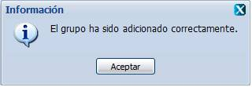
Figura 7. Mensaje de información
2.
Modificar:
Mediante el
botón Modificar se puede ejecutar la
siguiente operación:
Modificar un grupo de usuarios por rol.
Una vez seleccionado en el listado de grupos de usuarios
al que se desea hacer la modificación se activará el botón Modificar. Dicho botón estará deshabilitado hasta tanto no se haya
seleccionado un grupo de usuarios por rol para modificarlo. Usted puede
seleccionar el grupo de usuarios dando clic sobre él y seguidamente deberá
presionar el botón Modificar. Cumpliendo con estas condiciones se
presenta una nueva ventana donde son mostrados los datos correspondientes al
grupo de usuarios por rol y es posible efectuar los cambios de interés. Ver
figura 8.
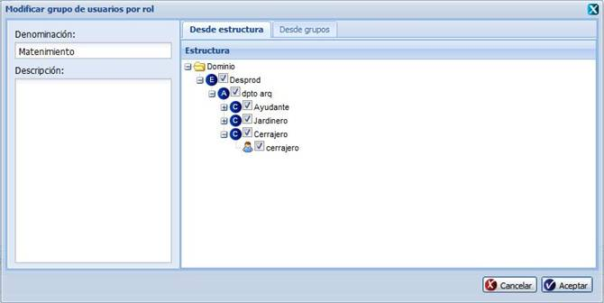
Figura 8. Operación Modificar grupo de
usuarios por rol
De igual forma que para adicionar un grupo de usuarios
por rol, los datos introducidos a la hora de modificar deben cumplir con las
condiciones especificadas anteriormente, en caso contrario se mostrarán los
mensajes de información respectivos en dependencia del error cometido.
Si se modifican correctamente los datos deseados, es
mostrado un mensaje indicando que se ejecutó correctamente la operación, ver
figura 9. Dé clic en el botón Aceptar para cerrar el mensaje de
información mostrado.
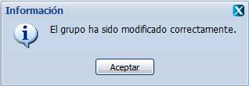
Figura 9. Mensaje de información
En caso de seleccionar la opción Modificar y no hacer cambios en la información referente al grupo
seleccionado se muestra el siguiente mensaje, ver figura 10. Dé clic en el
botón Aceptar para cerrar el mensaje
de información mostrado y realice alguna modificación en la interfaz
correspondiente o cancele la operación.
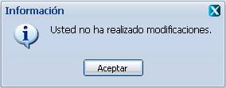
Figura 10. Mensaje de
información
3.
Eliminar:
Mediante el
botón Eliminar se puede ejecutar la siguiente operación:
Eliminar grupo(s) de usuarios por rol.
Inicialmente este botón estará deshabilitado hasta tanto no se haya
seleccionado al menos un grupo de usuario por rol. Se puede seleccionar el o
los grupos de usuarios por rol a eliminar dando clic sobre cada uno. Seguidamente deberá presionar el
botón Eliminar. Cumpliendo con estas
condiciones se muestra un mensaje de confirmación para asegurar que se desea
efectuar la operación, ver figura 11,
este mensaje es en caso que se desee eliminar un solo grupo.
Figura 11. Mensaje de
confirmación
Si se presiona el botón Aceptar se procede a la eliminación del grupo de usuarios
seleccionado y se muestra un mensaje de información notificando que el grupo de
usuarios fue eliminado correctamente, ver figura 12. Dé clic en el botón Aceptar
para cerrar el mensaje de información mostrado.
Si
usted no desea eliminar el grupo de usuarios dé clic sobre el botón Cancelar del mensaje de confirmación.
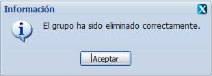
Figura 12. Mensaje
de información
4.
Cambiar
alias a usuarios:
Mediante el
botón Cambiar alias a usuarios se
puede ejecutar la siguiente operación:
Cambiar el alias a los usuarios de un grupo de usuarios por rol.
Primeramente
en el Registro de usuarios por rol se debe seleccionar el grupo de usuarios al
que pertenece el usuario que se le cambiará el alias. Luego se activará el
botón Cambiar alias a usuarios.
Dicho botón estará deshabilitado hasta tanto no se haya realizado una
selección. Cumpliendo con estas condiciones se presenta una ventana donde es
posible sobrescribir la denominación del alias. Ver figura 13.
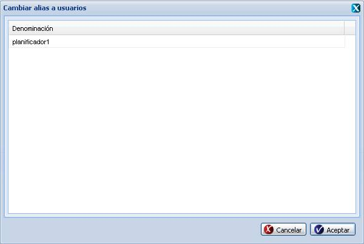
Figura 73. Operación cambiar
alias a usuarios
Dé clic en el usuario al cual desea modificar el alias.
Podrá editar el alias de cuantos usuarios desee y posteriormente oprimir el
botón Aceptar para guardar los cambios. Si usted elige Cancelar
no se modificará el alias del (los) usuario(s) seleccionado(s).
Una
vez ingresados los datos correctamente si presiona el botón Aceptar el sistema muestra un mensaje
de información indicando que ha sido modificado correctamente. Ver figura 14.
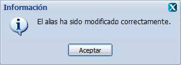
Figura 14. Mensaje
de información
En caso de seleccionar la opción Cambiar alias a usuarios y
no hacer cambios en la denominación referente al alias de los usuarios del
grupo seleccionado se muestra el siguiente mensaje, ver figura 15. Dé clic en el botón Aceptar para cerrar el mensaje de información mostrado y realice
alguna modificación en la interfaz correspondiente o cancele la operación.
Figura 15. Mensaje
de información
5.
Activar:
Mediante el
botón Activar se puede ejecutar la siguiente operación:
Activar grupo(s) de usuarios por rol.
Una vez seleccionado en el listado de grupos de usuarios el o los grupos
que desea activar se mostrará habilitado en la parte superior de la interfaz el
botón Activar. En caso de que el o los grupo de usuarios por rol se
encuentren desactivados el botón Activar se habilitará, si al menos uno
de estos grupos ya está activado no se habilitará el botón. Una vez que se haya
habilitado el botón Activar, dé clic en él y el sistema pedirá
una confirmación como se muestra en la figura 16, este
mensaje es en caso que se desee activar un solo grupo.
Si usted presiona Aceptar se activará el grupo de usuarios
seleccionado. Si elige Cancelar no se activará el grupo de usuarios.
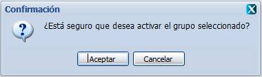
Figura 16. Operación
activar grupo de usuarios
Posteriormente, en caso de haber aceptado activar el grupo de usuarios,
el sistema mostrará un mensaje de información indicando que ha sido activado
correctamente el grupo de usuarios según se muestra en la figura 17. Dé clic en
el botón Aceptar para cerrar el mensaje de información mostrado.
Figura 17. Mensaje
de información
6.
Desactivar:
Mediante el
botón Desactivar se puede ejecutar
la siguiente operación:
Desactivar grupo(s) de usuarios por rol.
Una vez seleccionado en el listado de grupos de usuarios aquel o aquellos
que se desea desactivar se mostrará habilitado en la parte superior de la
interfaz el botón Desactivar. En caso de que el o los grupos de usuarios
por rol se encuentren activados el botón Desactivar se habilitará, si al
menos uno de estos grupos ya está desactivado no se habilitará el botón. Una
vez que se haya habilitado el botón Desactivar, dé clic en él y el sistema
pedirá una confirmación como se muestra en la figura 18, este mensaje es en
caso que se desee desactivar un solo grupo.
Si usted presiona Aceptar se desactivará el grupo de usuarios
seleccionado. Si elige Cancelar no se desactivará el grupo de usuarios.
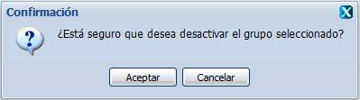
Figura 18. Operación
desactivar grupo de usuarios
Posteriormente, el sistema mostrará un mensaje de
información indicando que ha sido desactivado correctamente el grupo de
usuarios según se muestra en la figura 19. Dé clic en el botón Aceptar
para cerrar el mensaje de información mostrado.
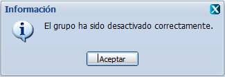
Figura 19. Mensaje
de información
7.
Buscar
grupo(s):
Mediante el
botón Buscar grupo(s) se puede
ejecutar la siguiente operación:
Buscar grupo(s) de usuarios.
Usted podrá realizar una búsqueda especificando los criterios de la
búsqueda en los campos nombrados Denominación y Activo alineados a la izquierda
del botón Buscar grupo(s). Una vez
que usted presione el botón Buscar grupo(s) se le mostrarán los resultados
de la búsqueda en el Registro de grupos de usuarios por rol. Al especificar la
denominación del grupo de usuarios que desea buscar podrá escribir una
denominación que coincida parcial o totalmente con la deseada. El valor de Activo
deberá ser seleccionado de los valores predeterminados en la lista desplegable
que se muestra.
En caso de no haber
introducido ningún criterio de búsqueda y luego presionar el botón Buscar grupo(s) se mostrará un mensaje de
error, ver figura 2 del capítulo 2.
Como podrá ver en la figura 20, al seleccionar un grupo de usuarios del
panel Registro de grupos de usuarios por rol, se le mostrarán los usuarios que
pertenecen a dicho grupo de usuarios en el panel Integrantes del grupo. Si
usted desea ocultar la información del panel Integrantes del grupo, podrá dar
clic sobre el botón de control en forma de doble saeta ubicado en la esquina superior derecha del
panel. En el caso que se encontrara oculto el panel, usted podrá dar clic sobre
dicho botón de control para que se le muestre la información.
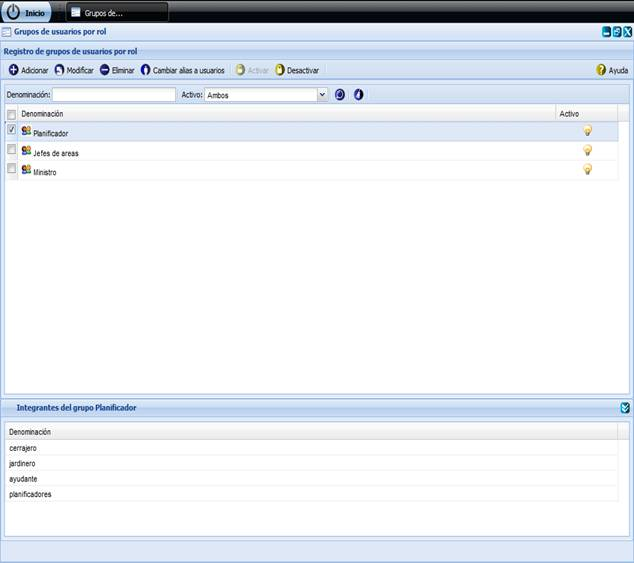
Figura 20. Registro de usuarios por
rol con el panel Integrantes del grupo
En caso de que no
coincida el criterio de búsqueda introducido con los grupos de usuarios definidos
en la aplicación se mostrará el siguiente mensaje
de información, ver figura 21, y se recarga el Registro de grupos de usuarios
por rol. Dé clic en el botón Aceptar
para cerrar el mensaje de información.
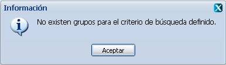
Figura 21. Mensaje
de información
8. Limpiar
filtro(s):
Mediante el botón Limpiar filtro(s)
se puede ejecutar la siguiente operación:
Borrar
lo escrito en los parámetros de la búsqueda.
En la interfaz Registro de
grupos de usuarios por rol usted podrá observar que se muestra activado el
botón Limpiar filtro(s). Al presionar el botón Limpiar filtro(s) usted
podrá borrar lo escrito en los campos de búsqueda Denominación y Activo y se
visualizan nuevamente los grupos en el Registro de grupos de usuarios por rol.
______________________________________________________________________________________________________________________________
Una vez seleccionado en el menú de Configuración la opción Permisos, se
muestra la interfaz correspondiente.
La interfaz de Permisos contiene dos pestañas: Mis permisos y Permisos
otorgados por mí.
De
acuerdo a la figura 22, la pestaña Mis permisos muestra al usuario los permisos
que le han sido asignados previamente sin permitir la modificación o
eliminación de ellos.
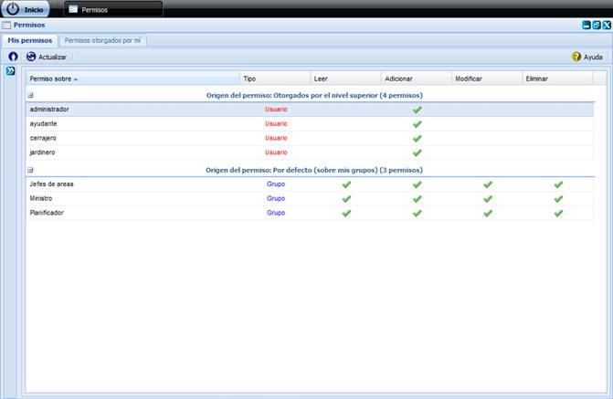
Figura 22. Interfaz
Gestionar permisos
Si presiona el botón Configurar
permisos sobre subordinados que se muestra en la parte superior izquierda
de la interfaz se desplegará el panel permisos sobre subordinados como se
muestra en la figura 23.
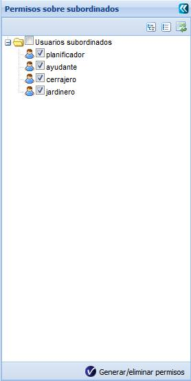
Figura 238. Operación Configurar
permisos sobre mis subordinados
Inicialmente
cada usuario tiene permisos para adicionar elementos de la planificación a sus
subordinados, por ejemplo: asignar una actividad o un objetivo, pero no le será
posible ver todos los elementos de la planificación que pertenecen a sus
subordinados. Dé clic en el campo de selección Usuarios subordinados para que
pueda leer, modificar y eliminar los elementos de la planificación de sus
subordinados. Seguidamente presione el botón Generar/eliminar permisos.
Ver figura 24.
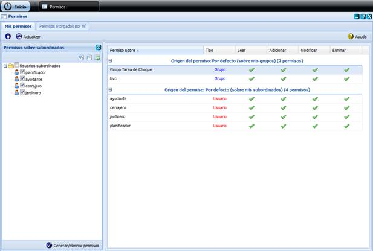
Figura 24. Operación Generar/eliminar
permisos
La pestaña Permisos otorgados por mí posibilita realizar operaciones con
los permisos. Dichas operaciones se señalan con números en la figura 25
mostrándose el orden y la posición que ocupa cada uno de los botones que
permiten realizar las funcionalidades.
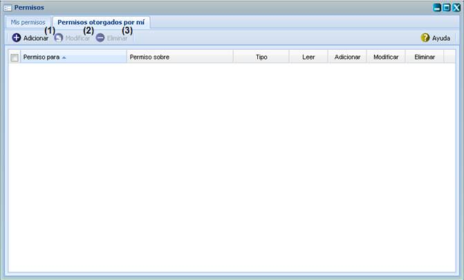
Figura 25. Operaciones
con los permisos
1.
Adicionar:
Mediante el
botón Adicionar se puede ejecutar la
siguiente operación:
Crear un nuevo permiso.
En la interfaz Permisos se muestra activado el botón Adicionar.
Presione el botón Adicionar y se le
mostrará la interfaz Adicionar permiso como muestra el ejemplo en la figura 26
para adicionar un nuevo permiso.
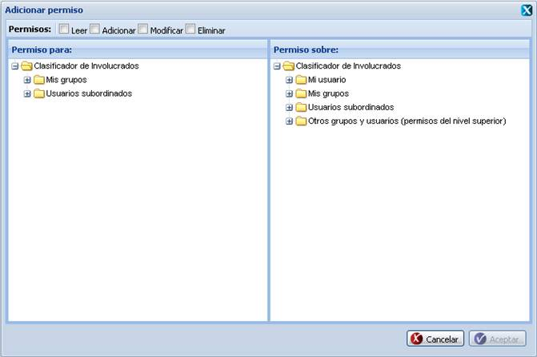
Figura 26. Operación Adicionar permiso
Para adicionar un permiso debe primeramente seleccionar, en la parte
superior de la interfaz, el (los) tipo(s) de permiso(s) que desea asignar. A
continuación seleccione el grupo al cual le va a asignar el o los permisos
seleccionados. Esto lo podrá hacer desde el panel a la izquierda nombrado Permiso para. En el panel a la derecha
nombrado Permiso sobre, usted podrá
seleccionar usuarios o grupos de usuarios sobre los cuales se le permiten
ejecutar los permisos seleccionados.
Una vez completados todos los datos se habilitará el
botón Aceptar para registrar en el sistema los permisos
asignados, dé clic en dicho botón si desea continuar la operación, en caso
contrario de clic en Cancelar y se
cerrará la ventana automáticamente y no se adicionará permiso.
Si
eligió la opción Aceptar se muestra un
mensaje de información como el que aparece en la figura 27.
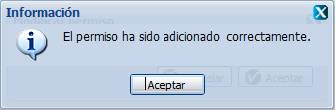
Figura 27. Mensaje de información
2.
Modificar:
Mediante el
botón Modificar se puede ejecutar la siguiente operación:
Modificar un permiso.
Una vez seleccionado en el listado de permisos aquel al que se desea
hacer la modificación usted podrá observar que se le muestra activado el botón Modificar.
Dicho botón estará deshabilitado hasta tanto no se haya seleccionado un permiso
para modificarlo. Se puede seleccionar el permiso dando clic sobre él y
seguidamente deberá presionar el botón Modificar. Cumpliendo con estas
condiciones se presenta una nueva ventana como la de la figura 28 donde son
mostrados los datos correspondientes al permiso y es posible efectuar los
cambios de interés.
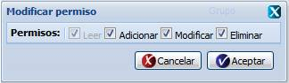
Figura 28. Operación Modificar permiso
De igual forma que para adicionar un permiso, los nuevos
datos introducidos a la hora de modificar deben cumplir con las condiciones especificadas
anteriormente, en caso contrario se mostrarán los mensajes de información
referenciados en dependencia del error cometido. Si
se modifican correctamente los datos deseados, es mostrado un mensaje indicando
que se ejecutó correctamente la operación, ver figura 29. Dé clic en el botón Aceptar
para cerrar el mensaje de información mostrado. Si da clic en el botón Cancelar volverá a la página de
Permisos.
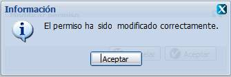
Figura 29. Mensaje de información
En caso de seleccionar la opción Modificar y no hacer cambios en la información referente al permiso
seleccionado se muestra el siguiente mensaje, ver figura 30. Dé clic en el
botón Aceptar para cerrar el mensaje
de información mostrado y realice alguna modificación en la interfaz
correspondiente o cancele la operación.
Figura 30. Mensaje de
información
3.
Eliminar:
Mediante el
botón Eliminar se puede ejecutar la
siguiente operación:
Eliminar permiso(s).
Inicialmente este botón estará deshabilitado hasta tanto no se haya
seleccionado al menos una entrada de la tabla de permisos que se muestra en la interfaz
de Permisos. Se puede seleccionar una o varias entradas de esta tabla dando
clic sobre ellas y seguidamente deberá presionar el botón Eliminar. Cumpliendo con estas condiciones se muestra un mensaje de
confirmación para asegurar que se desea efectuar la eliminación. Ver figura 31,
este mensaje es en caso que se desee eliminar un solo
permiso.
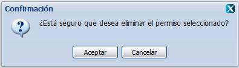
Figura 31. Mensaje de confirmación
Si se presiona el botón Aceptar
se procede a la eliminación del permiso seleccionado y se muestra un mensaje de
información notificando que fue eliminado correctamente, ver figura 32. Dé clic
en el botón Aceptar del mensaje de
información para cerrarlo. Si usted no desea eliminar el permiso dé clic sobre
el botón Cancelar del mensaje de
confirmación que muestra la figura 31.
Figura 32. Mensaje de información
______________________________________________________________________________________________________________________________
Una vez seleccionado en el menú de Configuración la opción Nomencladores, se muestra la
interfaz correspondiente.
Para los nomencladores existentes en la aplicación, las operaciones a desarrollar se muestran en
la figura 33 Estos son:
Categoría del plan
Unidad de medida del criterio
Categoría de la actividad
Tipo de actividad
Tipo de FIP
Nivel de acceso al FIP
A las operaciones que se realizan con cada nomenclador se puede acceder
desde la parte superior derecha de la interfaz. Dichas operaciones están señaladas
con números en la figura 33 mostrándose el orden y la posición que ocupa cada
uno de los botones que permiten realizar las funcionalidades.
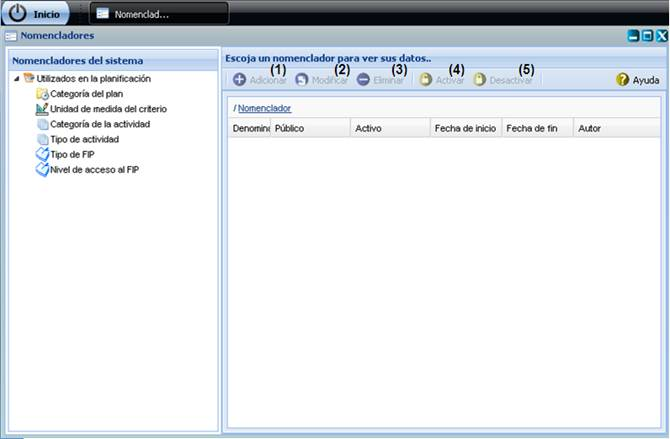
Figura 33. Nomencladores y
operaciones a realizar con ellos
1.
Adicionar:
Mediante el
botón Adicionar se pueden ejecutar
las siguientes operaciones:
Adicionar Categoría del plan, Unidad de medida del criterio, Categoría
de la actividad, Tipo de actividad, Tipo de FIP, Datos de procedencia del FIP
y/o Nivel de acceso al FIP.
Una vez seleccionado en el panel izquierdo el Tipo de Nomenclador del sistema que se desea
adicionar se mostrará el registro correspondiente, mostrándose activado el
botón Adicionar. Dé clic sobre dicho botón y podrá adicionar los datos
del nomenclador como muestra el ejemplo en la figura 34.
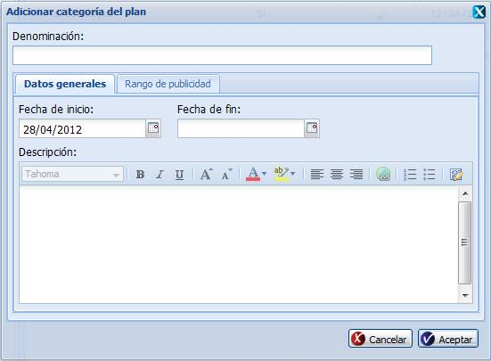
Figura 34. Operación Adicionar
nomenclador
Para adicionar un nomenclador, usted debe introducir la denominación del
mismo y en la pestaña Datos generales ingresará las fechas de inicio y fin del
nomenclador, así como la descripción. En el caso de que se encuentre
adicionando una categoría de actividad entonces deberá indicar además el color,
presionando el ícono correspondiente y luego seleccionar el color deseado de la
tabla de colores que se muestra (en caso de no seleccionar un color el sistema
establecerá el color blanco por defecto). En la pestaña Rango de publicidad
usted debe seleccionar para qué usuarios será visible el nomenclador que está
adicionando. Lo anterior se puede realizar seleccionando los usuarios y/o
grupos de usuarios del árbol que se muestra. Ver figura 35.
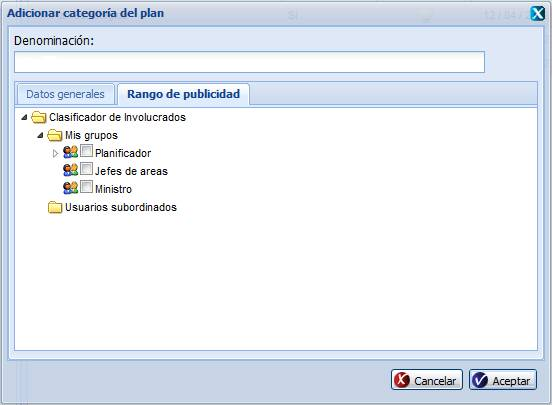
Figura 35. Operación Adicionar
nomenclador
La denominación del nomenclador deberá ser una
combinación de letras y números con la posibilidad de contener caracteres
especiales entre ellos. La fecha de inicio así como la fecha de fin deberá
seleccionarse del calendario que se muestra cuando se da clic en los campos de
fecha. Los campos fecha de inicio y fecha de fin no permitirán al usuario
escribir sobre ellos. Igualmente el sistema no permitirá al usuario seleccionar
una fecha de fin anterior a la fecha de inicio.
Si no selecciona una fecha de inicio para un nomenclador
y presiona el botón Aceptar, el
nomenclador que está adicionando se creará
con una fecha de inicio igual a la fecha actual del sistema. La descripción
deberá ser una combinación de
letras, números y caracteres que describa al nomenclador adicionado. Los datos
de la fecha de inicio, fecha de fin, descripción, color y rango de publicidad
podrán dejarse vacíos a consideración del usuario.
En caso que se dejen en blanco al menos unos de los campos obligatorios y
luego se presione Aceptar se mostrará un mensaje de error, ver figura 1
del capítulo 2, pues estos datos son obligatorios.
En caso que se introduzcan valores incorrectos y se presione el botón Aceptar
se muestra el mensaje de error correspondiente a figura 3 del capítulo 2.
Si se introducen correctamente todos los datos y se
presiona el botón Aceptar el sistema
almacena los datos, cierra la ventana desde donde se introducen los datos y se
muestra un mensaje indicando que se ejecutó la operación correctamente, ver
figura 36.
Si presiona
el botón Cancelar, es cerrada la
ventana y no se adicionan los datos.
Figura 36. Mensaje de información
2.
Modificar:
Mediante el
botón Modificar se pueden ejecutar
las siguientes operaciones:
Modificar Categoría del plan, Unidad de medida del criterio, Categoría
de la actividad, Tipo de actividad, Tipo de FIP, Datos de procedencia del FIP,
y/o Nivel de acceso al FIP.
Una vez seleccionado en el panel izquierdo el Tipo de
Nomenclador del sistema donde se desea hacer la modificación se mostrará la
interfaz correspondiente que contiene el botón para realizar la operación. El
botón Modificar estará deshabilitado
hasta tanto no se haya seleccionado un elemento para modificarlo. Se puede
seleccionar el nomenclador dando clic sobre él y seguidamente deberá presionar
el botón Modificar. Cumpliendo con estas condiciones se presenta una nueva ventana como se
muestra en la figura 37, donde son mostrados los datos correspondientes al
nomenclador y es posible efectuar los cambios de interés.
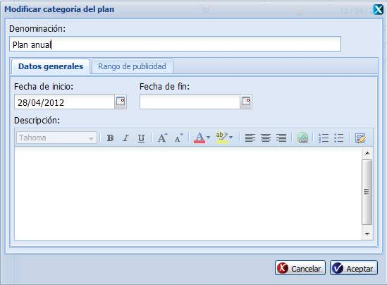
Figura 379.
Operación Modificar nomenclador
Los nuevos datos introducidos a la hora de modificar deben cumplir con
las condiciones especificadas para el adicionar nomenclador (consultar la
sección del botón Adicionar de nomencladores), en caso contrario se
mostrarán los mensajes de información correspondientes en dependencia del error
cometido. Si se desea modificar un nomenclador y este ya ha sido eliminado del
sistema, se mostrará un mensaje de error, ver figura 6, capítulo 2.
Si se modifican correctamente los datos deseados, es mostrado un mensaje
indicando que se ejecutó correctamente la operación, ver figura 38. Dé clic en
el botón Aceptar para cerrar el mensaje de información mostrado.
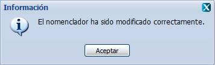
Figura 38. Mensaje
de información
En caso de seleccionar la opción Modificar y no hacer cambios en la información referente al nomenclador
seleccionado se muestra el siguiente mensaje, ver figura 39. Dé clic en el
botón Aceptar para cerrar el mensaje
de información mostrado y realice alguna modificación en la interfaz
correspondiente o cancele la operación.
Figura 39. Mensaje de
información
3.
Eliminar:
Mediante el
botón Eliminar se pueden ejecutar
las siguientes operaciones:
Eliminar Categoría del plan, Unidad de medida del criterio, Categoría
de la actividad, Tipo de actividad, Categoría del FIP, Datos de procedencia del
FIP, y/o Nivel de acceso al FIP.
Inicialmente este botón estará deshabilitado hasta tanto no se haya
seleccionado el Tipo de Nomenclador del sistema sobre el cual desea realizar
esta operación. Una vez seleccionado el tipo de nomenclador se muestra la
interfaz correspondiente que contiene el botón para realizar la operación y de
ahí en adelante realice la selección dando clic sobre el elemento que desea
eliminar y seguidamente deberá presionar el botón Eliminar. Cumpliendo con estas condiciones se muestra un mensaje de
confirmación para asegurar que se quiera efectuar la operación como en la
figura 40.
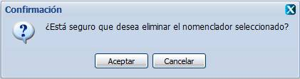
Figura 40. Mensaje de confirmación
Si se presiona el botón Aceptar se procede a la eliminación del elemento seleccionado,
verificando primero que el mismo no esté siendo utilizado en el sistema. Si
usted no desea eliminar el nomenclador presione el botón Cancelar del mensaje de confirmación.
En caso que el nomenclador esté siendo utilizado, el
sistema desactiva el nomenclador pues no lo puede eliminar y muestra un mensaje
de información notificando que el nomenclador ha sido desactivado. Ver figura
41.
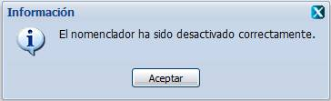
Figura 41. Mensaje de
información
En caso de que el nomenclador no esté siendo utilizado en
el sistema se muestra un mensaje de información notificando que el nomenclador
fue eliminado correctamente, ver figura 42. Dé clic en el botón Aceptar
para cerrar el mensaje de información mostrado.
Figura 42. Mensaje de información
4.
Activar:
Mediante el
botón Activar se pueden ejecutar las siguientes operaciones:
Activar Categoría del plan, Unidad de medida del criterio,
Categoría de la actividad, Tipo de actividad, Categoría del FIP, Datos de
procedencia del FIP, y/o Nivel de acceso
al FIP.
Una vez seleccionado el Tipo de Nomenclador del sistema se sobre el cual
se desea realizar esta operación se
mostrará la interfaz correspondiente que contiene el botón Activar. Seguidamente usted deberá seleccionar el
o los elementos que desea activar. En
caso de que el o los elementos se encuentren desactivados el botón Activar
se habilitará, si al menos uno está activado no se habilitará el botón.
Una vez se haya habilitado el botón Activar, dé clic en él y el
sistema pedirá confirmación como se muestra en la figura 43, este mensaje es en caso que se desee activar un solo elemento.
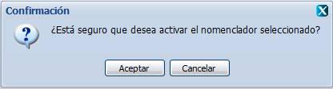
Figura 43. Mensaje de confirmación
Si usted presiona Aceptar se activará el elemento seleccionado.
Si elige Cancelar no se activará el elemento. Posteriormente, el sistema
mostrará un mensaje de información indicando que ha sido activado correctamente
el elemento según se muestra en la figura 44. Dé clic sobre el botón Aceptar que muestra el mensaje de
información.
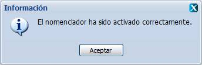
Figura 44.
Mensaje de información
5.
Desactivar:
Mediante el
botón Desactivar se pueden ejecutar las siguientes operaciones:
Desactivar Categoría del plan, Unidad de medida del criterio,
Categoría de la actividad, Tipo de actividad, Categoría del FIP, Datos de
procedencia del FIP, y/o Nivel de acceso al FIP.
Una vez seleccionado el Tipo de Nomenclador del sistema se sobre el cual
se desea realizar esta operación se
mostrará la interfaz correspondiente que contiene el botón Desactivar.
Seguidamente usted deberá seleccionar mediante un clic el o los elementos que
desea desactivar. En caso de que el o
los elementos se encuentren activados el
botón Desactivar se habilitará, si al menos uno está desactivado no se
habilitará el botón.
Una vez se haya habilitado el botón Desactivar, dé clic en él y
el sistema pedirá confirmación como se muestra en la figura 45, este mensaje es en caso que se desee desactivar un solo elemento.
Si usted presiona Aceptar se desactivará el elemento en
seleccionado. Si elige Cancelar no se desactivará el elemento.
Posteriormente, el sistema mostrará un mensaje de información indicando que ha
sido desactivado correctamente el nomenclador según se muestra en la figura 46.
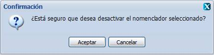
Figura 45.
Mensaje de confirmación
Figura 46. Mensaje de información
Nota: En
la interfaz de cada nomenclador aparecerá deshabilitada la opción de ordenar
ascendente y descendentemente, así como la posibilidad de seleccionar las
columnas que se muestran en cada una de las
interfaces de los nomencladores.
______________________________________________________________________________________________________________________________
El modo de acceso a las operaciones que integra el módulo Planeación se
muestra en la figura 47.
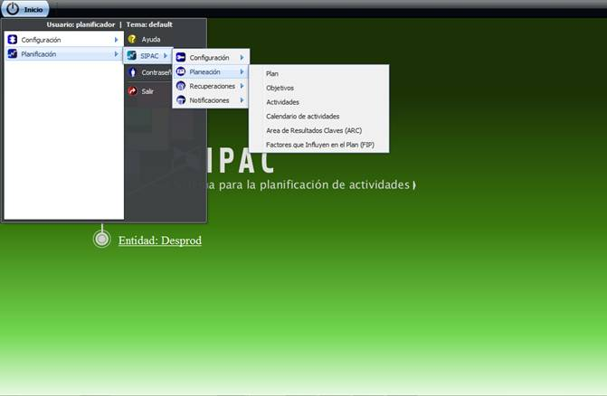
Figura 47.
Modo de acceso al módulo Planeación
______________________________________________________________________________________________________________________________________________________
Una vez seleccionado en el
menú de Planeación la opción Plan, se muestra la interfaz correspondiente.
Desde
la parte superior izquierda de la interfaz
se accede a las operaciones que se pueden realizar con los planes. Estas
están señaladas con números en la figura 48
mostrándose el orden y la posición que ocupa cada uno de los botones que
permiten realizar las funcionalidades.
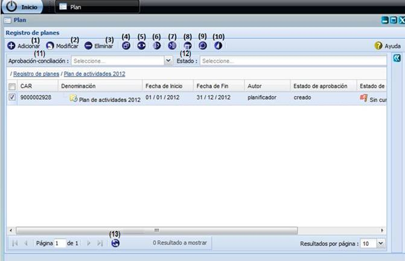
Figura 48. Operaciones
con planes
1.
Adicionar:
Mediante el botón Adicionar se puede ejecutar la
siguiente operación:
Crear
un nuevo plan.
Para
adicionar un nuevo plan presione el botón Adicionar que se encuentra
habilitado en la interfaz Registro de planes y se mostrará la
interfaz Adicionar plan como muestra la figura 49.
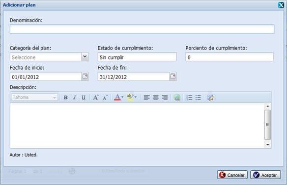
Figura 49. Operación Adicionar
plan
La interfaz le permite introducir la denominación, la categoría del
plan, el porciento de cumplimiento, la fecha de inicio, la fecha de fin y la
descripción. El estado de cumplimiento el sistema lo determinará a partir del
valor registrado en porciento de cumplimiento.
La denominación del plan deberá ser una combinación de letras y números
con la posibilidad de contener caracteres especiales entre ellos. La
descripción deberá ser una combinación de letras,
números y otros caracteres del teclado. Para indicar la categoría del plan
usted podrá seleccionar el valor de la lista desplegable que se muestra. En
porciento de cumplimiento solo podrá ingresar números entre los valores de 0 a
100. Las fechas de inicio y fin se seleccionarán en el calendario disponible en
estos campos. Debe considerar que el sistema solo permite seleccionar una fecha
de inicio que sea menor o igual que la fecha de fin. El calendario brinda la
posibilidad de seleccionar los datos de la fecha actual del sistema a través
del botón Hoy.
Si se deja en blanco el campo denominación, la fecha de inicio y la
fecha de fin y luego se presione el botón Aceptar, se mostrará un
mensaje de información pues estos datos son obligatorios para cuando se
adiciona un plan. Ver figura 1 del capítulo 2.
En caso que se introduzcan valores incorrectos y se presione el botón Aceptar
se muestra el mensaje de información correspondiente a figura 3 del capítulo 2.
Una vez que los datos necesarios para la adición de un nuevo plan hayan
sido insertados, se podrá guardar la información en el sistema. Si se
introducen correctamente todos los datos y se presiona el botón Aceptar el sistema introduce los datos,
cierra la ventana y se muestra un mensaje indicando que se ejecutó la operación
correctamente, ver figura 50. El plan adicionado se muestra en el panel
Registro de planes de la interfaz Plan. Si presiona el botón Cancelar, es cerrada la ventana y no se
registra un nuevo plan.
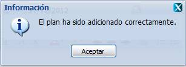
Figura 50. Mensaje de información
2.
Modificar:
Mediante el botón Modificar se puede ejecutar la
siguiente operación:
Modificar
un plan.
Una vez seleccionado en el panel Registro de planes el plan al que se le
desea hacer la modificación, se activará el botón Modificar. Dicho botón estará deshabilitado hasta tanto no se haya seleccionado
un plan para modificarlo. Usted puede seleccionar el plan dando clic sobre él y
seguidamente deberá presionar el botón Modificar. Cumpliendo con estas
condiciones se presenta una nueva ventana como en la figura 51 donde son
mostrados los datos correspondientes al plan y es posible efectuar los cambios
de interés.
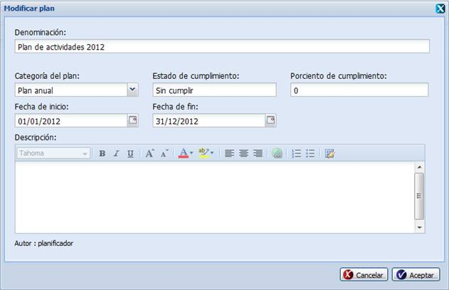
Figura 51. Operación Modificar plan
Los nuevos datos introducidos a la hora de modificar deben cumplir con
las condiciones especificadas para el adicionar plan (consultar la sección del
botón Adicionar de plan), en caso contrario se mostrarán los mensajes de
información correspondientes en dependencia del error cometido.
Si se modifican correctamente los datos deseados, es mostrado un mensaje
indicando que se ejecutó correctamente la operación, ver figura 52. Dé clic en
el botón Aceptar para cerrar el mensaje de información mostrado.
Figura 52. Mensaje de información
En caso de seleccionar la opción Modificar y no hacer cambios en la información referente al plan
seleccionado se muestra el siguiente mensaje, ver figura 53. Dé clic en el
botón Aceptar para cerrar el mensaje
de información mostrado y realice alguna modificación en la interfaz
correspondiente o cancele la operación.
Figura 53. Mensaje de
información
3.
Eliminar:
Mediante el botón Eliminar se puede ejecutar la siguiente
operación:
Eliminar
plan(es).
Inicialmente
este botón estará deshabilitado hasta tanto no se haya seleccionado al menos un
plan. Se pueden seleccionar el o los
planes dando clic sobre cada uno. Seguidamente deberá presionar el botón
Eliminar. Cumpliendo con estas
condiciones se muestra un mensaje de confirmación para asegurar que se quiera
efectuar la operación. Ver figura 54, este mensaje es en caso que se desee eliminar un solo plan.
Figura 54. Mensaje de confirmación
Si se presiona el botón Aceptar
se procede a la eliminación del plan seleccionado, verificando primero que el
mismo no esté siendo utilizado en el sistema. En caso positivo, el sistema
procede a eliminar las relaciones de otros elementos de la planificación
establecidas con el plan para luego eliminarlo y se muestra un mensaje de
información notificando que el plan fue eliminado correctamente, ver figura 55.
Si usted no desea eliminar el plan dé clic sobre el botón Cancelar del mensaje de confirmación.
Figura 55.
Mensaje de información
4.
Desglosar plan:
Mediante el botón Desglosar plan se puede ejecutar la
siguiente operación:
Consultar
el desglose de un plan.
Una vez
seleccionado en el panel Registro de planes, el plan del que se desea consultar
su desglose se activará el botón Desglosar plan.
Dicho botón estará deshabilitado hasta tanto no se haya seleccionado un plan.
Presione este botón y se presentará una ventana como en la figura 56 donde son
mostrados los datos correspondientes al desglose del plan seleccionado. El
desglose del plan consiste en un listado jerárquico de los elementos de la
planificación que tributan al plan en cuestión, ya sean las áreas de resultados
claves en las que se apoya ese plan, así como los objetivos y las actividades
que tributan al plan. La ventana está provista de una Leyenda con el
significado de los íconos mostrados en el desglose. Para cerrar la ventana
Desglose del plan dé clic sobre el botón Cerrar.
No será posible modificar los datos mostrados en el Desglose del plan.
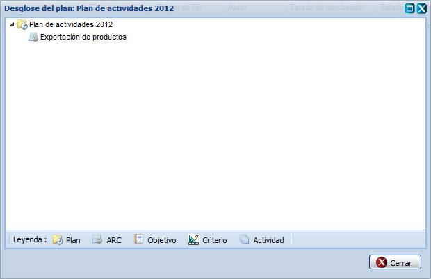
Figura 56. Operación Desglose del
plan
En la interfaz
Desglose del plan usted puede consultar la información más detallada referente
a los elementos que componen un plan dando clic secundario sobre cualquiera de
los mismos. Al dar clic secundario sobre un elemento del plan se le muestra la
opción Mostrar detalles, dé clic sobre él y se le mostrará la interfaz Ver datos de la actividad como
muestra la figura 57.
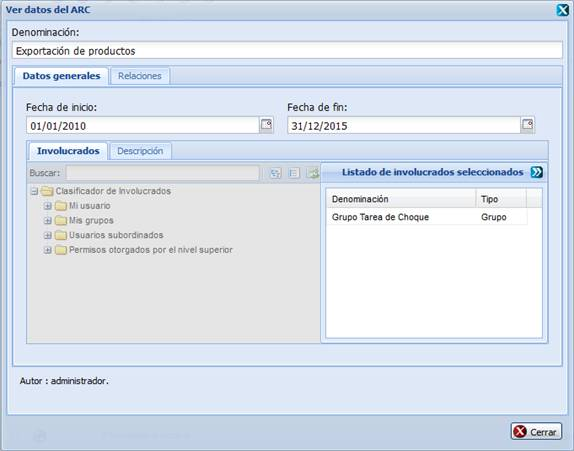
Figura 57. Interfaz Detalles
del desglose del plan
En
esta interfaz podrá conocer los datos del elemento seleccionado, estos datos no
se permite modificarlos. Dicha interfaz de consulta se puede cerrar dando clic
sobre el botón Cerrar que aparece en
la parte inferior derecha.
5.
Gestionar observaciones
al plan:
Mediante el
botón Gestionar observaciones al
plan se puede ejecutar las siguientes operaciones:
Adicionar observaciones.
Eliminar observaciones.
Una vez seleccionado en el panel Registro de planes, el plan al que se
le desea gestionar una observación se activará el botón Gestionar
observaciones al plan. Dicho botón estará deshabilitado hasta tanto
no se haya seleccionado un plan. Presione dicho botón y se presentará una nueva
ventana como en la figura 56 donde son mostrados los datos correspondientes a las observaciones realizadas
anteriormente sobre el plan seleccionado, en caso de que existan. A las operaciones que se realizan con las
observaciones se pueden acceder desde la parte superior izquierda de la
interfaz. Dichas operaciones están señaladas con números en la figura 58
mostrándose el orden y la posición que ocupan cada uno de los botones que
permiten realizar las funcionalidades. Al terminar de realizar las operaciones
deseadas sobre las observaciones usted puede cerrar la ventana Gestionar
observaciones dando clic sobre el botón Cerrar.
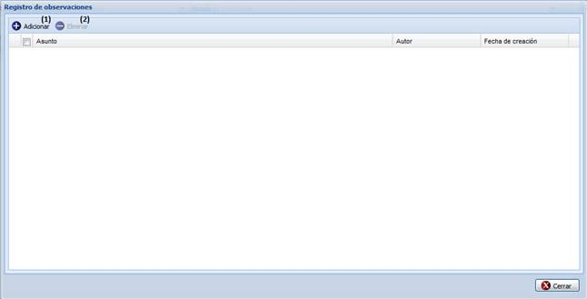
Figura 58. Operaciones con observaciones
3.1
Adicionar:
Mediante el
botón Adicionar se puede
ejecutar la siguiente operación:
Crear una observación.
En la interfaz Gestionar observaciones usted podrá observar
que se le muestra activado el botón Adicionar. Usted podrá dar un clic en el botón Adicionar y se mostrará la interfaz Adicionar
observaciones como muestra en la figura 59 la cual permite adicionar los datos
de la nueva observación.
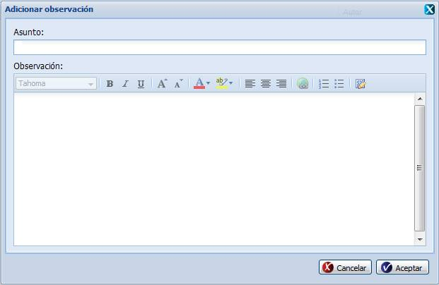
Figura 59. Operación Adicionar
observación
Para adicionar una observación usted debe introducir el
asunto en el campo que se le muestra con ese nombre así como la observación en
sí.
El asunto y la observación deberán ser una combinación de
letras y números con la posibilidad de contener caracteres especiales entre
ellos.
En caso que se dejen en blanco al menos unos de los campos obligatorios y
luego se presione Aceptar se mostrará un mensaje de error, ver figura 1
del capítulo 2.
En caso que se introduzcan valores incorrectos y se presione el botón Aceptar
se muestra el mensaje de error correspondiente a figura 3 del capítulo 2.
Una vez que los datos necesarios para la adición de una
nueva observación hayan sido insertados se podrá guardar la información en el
sistema. Si se introducen correctamente todos los datos y se presiona el botón Aceptar el sistema introduce los datos,
cierra la ventana y se muestra un mensaje indicando que se ejecutó la operación
correctamente, ver figura 60. Dé clic en el botón Aceptar para cerrar el
mensaje de información mostrado. Por último, si presiona el botón Cancelar de la ventana de adición, es cerrada la ventana y no se ejecuta
la operación.
Figura 60.
Mensaje de información
3.2
Eliminar:
Mediante el
botón Eliminar se puede ejecutar la siguiente operación:
Eliminar una observación.
Inicialmente este botón estará deshabilitado hasta tanto
no se haya seleccionado una observación. Se puede seleccionar una observación
dando clic sobre ella. Seguidamente deberá presionar el botón Eliminar. Cumpliendo con estas
condiciones se muestra un mensaje de confirmación para asegurar que se quiera
efectuar la operación, ver figura 61.
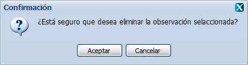
Figura 61. Mensaje de confirmación
Si se presiona el botón Aceptar
se procede a la eliminación de la observación seleccionada y se muestra un
mensaje de información notificando que la observación fue eliminada
correctamente, ver figura 62. Dé clic en el botón Aceptar para cerrar el
mensaje de información mostrado. En caso de que usted no desee eliminar la
observación dé clic sobre el botón Cancelar
del mensaje de confirmación.
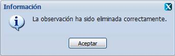
Figura 62. Mensaje de información
6.
Exportar plan(es):
Mediante
el botón Exportar plan(es) se puede
ejecutar la siguiente operación:
Inicialmente el botón
estará deshabilitado hasta que no se haya seleccionado el plan que se desea
exportar. Se puede seleccionar un plan dando clic sobre él. Seguidamente deberá
presionar el botón Exportar plan(es).
Siguiendo las instrucciones se muestra un mensaje de confirmación para asegurar
que se quiere realizar la operación, ver figura 63, este mensaje es en caso que se desee exportar un solo
plan.
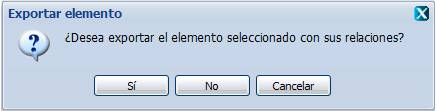
Figura
63. Operación Exportar elemento
Si presionas
el botón Sí exportará el elemento
con sus relaciones como indica el mensaje de confirmación y se guardará con el
formato .sipac. Si presiona el botón No exportará
el elemento sin sus relaciones, ver figura 64.
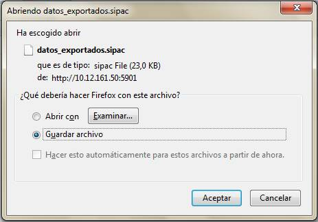
Figura 64. Guardar archivo exportado
Si no desea exportar presione Cancelar y regresará al Registro de
planes.
7.
Importar plan(es):
Mediante
el botón Importar plan(es) se puede
ejecutar la siguiente operación:
Para Importar uno o
varios elementos de la planificación solo se debe presionar el botón Importar plan(es) el sistema le da la
opción al usuario de seleccionar la dirección
donde está el elemento de la
planificación a Importar, ver figura 65.
El usuario debe tener en cuenta que el
elemento de la planificación a importar puede tener nomencladores que no se
encuentren definidos en la aplicación en la que está trabajando. Si el usuario no desea
importar da clic sobre el botón Cancelar del mensaje de confirmación.
Figura
65. Seleccionar
elemento a Importar
Luego de presionar el
botón Aceptar aparece en la pantalla
Detalles de Importación donde se
describen los detalles de el o los
elemento (s) de la planificación a importar; si el elemento de la
planificación a importar existe en la aplicación el usuario tiene la opción de
ver la información del elemento de la planificación a importar y el elemento de
la planificación existente,
seleccionando el elemento de la planificación y dando clic en la saeta Ver comparación, ver Figura 66.
Figura 66. Detalles de
Importación
Esta pantalla consta de
dos pestañas fundamentales: Elementos
que coinciden con la Información existente, ver Figura 67 y Fallos de Importación en la que se
muestran los nomencladores que no se encuentran en la aplicación actual y
que tiene nuevo el elemento de la
planificación a importar, ver Figura 68.
Figura
67. Detalles
de Importación. Pestaña 1
Figura 68.
Detalles de Importación. Pestaña 2
Seguidamente deberá presionar el botón
Importar plan(es). Luego de
importado el o los elemento (s) de la planificación se muestra un mensaje de
información asegurando que el elemento de la planificación ha sido importado;
se da clic al botón Actualizar y muestra todos los elementos de la
planificación existentes en la aplicación.
8.
Observar notificaciones
generadas:
Mediante el
botón Observar notificaciones generadas se puede
ejecutar la siguiente operación:
Ver el registro de notificaciones generadas a partir de un conjunto
de acciones realizadas sobre los elementos.
Presione el botón Observar
notificaciones generadas que se encuentra en la parte superior de
la interfaz y se mostrará la Interfaz correspondiente a este módulo. Consultar
la descripción de las operaciones que se pueden realizar en la sección 1.4 Notificaciones.
9.
Búsqueda
avanzada de plan(es):
Mediante el
botón Búsqueda avanzada de plan(es)
se puede ejecutar la siguiente operación:
Buscar plan(es).
Presione el
botón Búsqueda avanzada de plan(es)
que se encuentra en la parte superior de la interfaz y se desplegará el panel
Opciones de búsqueda a la derecha de la interfaz. Complete los parámetros que
desee y presione el botón Buscar en
la parte inferior del panel, los resultados serán mostrados en el Registro de
planes. Los parámetros fecha de inicio y fecha de fin deberán de ser
seleccionados en el calendario de los campos correspondientes. Ver figura 69.
Figura 109. Operación Búsqueda
avanzada de plan(es)
En caso de no
haber introducido ningún criterio de búsqueda y luego presionar el botón Buscar se
mostrará un mensaje de error, ver figura 2 del capítulo 2.
En caso de que no coincida
el criterio de búsqueda introducido con los planes definidos en la aplicación se mostrará el siguiente mensaje de información, ver
figura 70, y se recarga el Registro de planes.
Dé
clic en el botón Aceptar para cerrar
el mensaje de información.
Figura 70. Mensaje de información
Usted podrá
dar clic secundario sobre un plan y se le muestra la opción Cambiar estado de aprobación a, ver
figura 71. Al dar clic sobre la opción Cambiar
estado de aprobación a, se le
muestra un menú de estados a los que puede cambiar el plan, dé clic sobre una
de las opciones para cambiar el estado de aprobación del plan seleccionado.
Figura 71. Interfaz
Cambiar estado de aprobación del plan
10.
Limpiar filtro(s):
Mediante el botón Limpiar filtros(s) se pueden ejecutar las siguientes operaciones:
Borrar
lo escrito en los parámetros de la búsqueda.
En la interfaz Registro de
planes se muestra activado el botón Limpiar filtros(s). Al presionar el botón Limpiar filtros(s) usted
podrá borrar lo escrito en los campos de búsqueda y se desmarcarán todas los
objetivos seleccionados. El botón Limpiar
del panel de búsqueda avanzada realiza la misma función con la diferencia que
limpia sólo los campos que corresponden a este panel específicamente.
11.
Aprobación-conciliación:
Mediante la lista
desplegable Aprobación-conciliación
se puede ejecutar la siguiente operación:
Filtrar
los planes aprobados y conciliados.
Usted podrá realizar un filtrado de los planes que se encuentren en un
determinado nivel de aprobación, seleccionando uno de los dos posibles valores
de la lista desplegable Aprobación-conciliación.
Una vez seleccionada la opción, el sistema le muestra en el Registro de planes
aquellos que coincidan con el valor de aprobación y conciliación especificado. Una
vez realizado el filtrado usted puede presionar el botón Limpiar
filtro(s) para que se limpien los criterios de búsqueda y se
muestren todos los planes en el Registro de planes.
12.
Estado:
Mediante la lista
desplegable Estado se puede ejecutar
la siguiente operación:
Filtrar
los planes que se encuentren en un estado de aprobación determinado.
Usted puede filtrar los planes que se encuentren aprobados, conciliados
y en un estado de aprobación determinado, seleccionando del conjunto de valores
que se le muestran de la lista desplegable Estado.
En correspondencia con el valor seleccionado el sistema le muestra en el
Registro de planes, todos los planes que estén aprobados, conciliados y
coincidan con el valor del estado seleccionado. Una vez realizado el filtrado
usted puede presionar el botón Limpiar filtro(s) para que se limpien los
criterios de búsqueda y se muestren todos los planes en el Registro de planes.
13.
Actualizar:
Presione el botón Actualizar
de la interfaz para que se
muestren en el Registro de planes todos los planes que están registrados en el
sistema.
______________________________________________________________________________________________________________________________
Una vez seleccionado en
el menú de Planeación la opción ARC, se muestra la interfaz correspondiente.
A las
operaciones que se pueden realizar con las áreas de resultados clave se accede
desde la parte superior de la interfaz. Dichas operaciones están señaladas con
números en la figura 72 mostrándose el orden y la posición que ocupa cada uno
de los botones que permiten realizar las funcionalidades. El sistema le permite
otra vía para acceder a las operaciones con las áreas de resultados claves como
se muestra en la figura 73, dando clic secundario sobre el listado de áreas de
resultados clave.
Figura 72. Registro de áreas de
resultados clave
Figura 73. Operaciones con áreas de
resultados clave con clic secundario
1.
Adicionar:
Mediante el
botón Adicionar se puede ejecutar la
siguiente operación:
Crear una nueva área de resultados clave.
Para adicionar una nueva área de resultados clave
presione botón Adicionar que se encuentra habilitado en la interfaz
Registro de áreas de resultados clave y se mostrará la interfaz Adicionar área de
resultados clave como muestra la figura 74.
.
Figura 74. Operación Adicionar área de
resultados clave
La interfaz
le permite introducir la denominación. El resto de los datos del área de
resultados clave se pueden introducir a través de las diferentes pestañas que componen
la interfaz.
La fecha de inicio, fecha de fin y descripción se podrán introducir en
la pestaña Datos generales. En esta misma pestaña usted podrá seleccionar a las
personas o usuarios que estén vinculados con el área de resultados clave. En la
segunda pestaña nombrada Relaciones usted podrá seleccionar el plan que se
apoyará en el área de resultado clave que se está adicionando.
La denominación del área de resultados clave deberá ser una combinación
de letras y números con la posibilidad de contener caracteres especiales entre
ellos.
La
descripción deberá ser una combinación de
letras, números y otros caracteres del teclado.
Las fechas de inicio y fin se seleccionarán en el calendario disponible
en estos campos. Debe considerar que el sistema solo permite seleccionar una
fecha de inicio que sea menor o igual que la fecha de fin. El calendario brinda
la posibilidad de seleccionar los datos de la fecha actual del sistema a través
del botón Hoy.
Los involucrados en el área de resultados clave se seleccionarán dando
clic en el árbol jerárquico que se muestra. Para relacionar el área de
resultados clave con algunos de los planes, deberá seleccionar en la interfaz
del Registro de planes con cuales planes se relaciona.
En caso que se dejen en blanco al menos unos de los campos obligatorios y
luego se presione Aceptar se mostrará un mensaje de error, ver figura 1
del capítulo 2.
En caso que se introduzcan valores incorrectos y se presione el botón Aceptar
se muestra el mensaje de error correspondiente a figura 3 del capítulo 2.
Una vez que los datos necesarios para la adición de una nueva área de
resultados clave hayan sido insertados, se podrá guardar la información en el
sistema. Si se introducen correctamente todos los datos y se presiona el botón Aceptar el sistema introduce los datos,
cierra la ventana y se muestra un mensaje indicando que se ejecutó la operación
correctamente, ver figura 75. Dé clic en el botón Aceptar del mensaje de información. Si presiona el botón Cancelar de la interfaz que se muestra
en la figura 74, es cerrada la
ventana y no se registra una nueva área de resultados clave. El área de
resultados clave adicionada se muestra en el panel Registro de áreas de
resultados clave de la interfaz Gestionar áreas de resultados clave.
Figura 75. Mensaje de
información
2.
Modificar:
Mediante el botón Modificar se puede ejecutar la
siguiente operación:
Modificar
un área de resultados clave.
Una
vez seleccionado en el Registro de áreas de resultados clave aquella que se
desea modificar se activará el botón Modificar.
Dicho botón estará deshabilitado hasta tanto no se haya seleccionado un área de
resultados clave para modificar. Usted podrá seleccionar el área de resultados
clave dando clic sobre ella y seguidamente deberá presionar el botón Modificar.
Cumpliendo con estas condiciones se presenta una nueva ventana como en la
figura 76 donde son mostrados los datos correspondientes al área de resultados
clave y es posible efectuar los cambios de interés.
Figura 76. Operación
Modificar área de resultados clave
Los nuevos datos introducidos a la hora de modificar deben cumplir con
las condiciones especificadas para el adicionar áreas de resultados clave, en
caso contrario se mostrarán los mensajes de información en dependencia del
error cometido.
Si se modifican correctamente los datos deseados, es mostrado un mensaje
indicando que se ejecutó correctamente la operación, ver figura 77. Dé clic en
el botón Aceptar para cerrar el mensaje de información mostrado.
Figura 77. Mensaje de información
En caso de seleccionar la opción Modificar y no hacer cambios en la información referente al ARC
seleccionada se muestra el siguiente mensaje, ver figura 78. Dé clic en el
botón Aceptar para cerrar el mensaje
de información mostrado y realice alguna modificación en la interfaz
correspondiente o cancele la operación.
Figura 78. Mensaje de
información
3.
Eliminar:
Mediante el botón Eliminar
se puede ejecutar la siguiente operación:
Eliminar ARC(s).
Inicialmente
este botón estará deshabilitado hasta tanto no se haya seleccionado al menos un
área de resultados clave. Se puede seleccionar el o las áreas de resultados
clave dando clic sobre ellas. Seguidamente deberá presionar el botón Eliminar. Cumpliendo con estas
condiciones se muestra un mensaje de confirmación para asegurar que se quiera
efectuar la operación, ver figura 79,
este mensaje es en caso que se desee eliminar una sola ARC.
Figura 79. Mensaje de confirmación
Si
se presiona el botón Aceptar se
procede a la eliminación del área de resultados clave seleccionada, verificando
primero que la misma no esté siendo utilizada en el sistema. En caso positivo,
el sistema procede a eliminar las relaciones con el área de resultados claves
para luego eliminarla y se muestra un mensaje de información notificando que el
área de resultados clave fue eliminada correctamente, ver figura 80. En caso
que esta ARC esté siendo utilizada se muestra el mensaje de información de la
figura 81. Dé clic en el botón Aceptar para cerrar el mensaje de
información mostrado. Si usted no desea eliminar el área de resultados clave dé
clic sobre el botón Cancelar del
mensaje de confirmación anterior.
Figura 80. Mensaje de
información
Figura 81. Mensaje de
información
4.
Activar:
Mediante el botón Activar
se puede ejecutar la siguiente operación:
Activar
un área de resultados clave.
Una
vez seleccionado en el Registro de áreas de resultados clave aquella que desea
activar se mostrará habilitado en la parte superior de la interfaz el botón Activar
si el área de resultados clave se encuentra desactivada. Una vez que se haya
habilitado el botón Activar, dé clic en él y el sistema pedirá
confirmación como se muestra en la figura 82 y si usted presiona Aceptar
se activará el área de resultados clave seleccionada. Si elige Cancelar
no se activará el área de resultados clave.
Figura 82. Mensaje de confirmación
Posteriormente,
en caso de haber aceptado activar el área de resultados clave, el sistema mostrará
un mensaje de información indicando que ha sido activada correctamente el área
de resultados clave según se muestra en la figura 83. Dé clic en el botón Aceptar
para cerrar el mensaje de información mostrado.
Figura 83. Mensaje de
información
5.
Desactivar:
Mediante el botón Desactivar se puede ejecutar la
siguiente operación:
Desactivar
un área de resultados clave.
Una vez
seleccionado en el listado de áreas de resultados clave aquella que desea
desactivar se mostrará habilitado en la parte superior de la interfaz el botón Desactivar
si el área de resultados clave se encuentra activada. Una vez que se
haya habilitado el botón Desactivar, dé clic en él y el sistema
pedirá una confirmación como se muestra en la figura 84 y si usted presiona Aceptar
se activará el área de resultados clave seleccionada. Si elige Cancelar
no se activará el área de resultados clave. Posteriormente, el sistema mostrará
un mensaje de información indicando que ha sido desactivada correctamente el
área de resultados clave según se muestra en la figura 85. Dé clic en el botón Aceptar
para cerrar el mensaje de información mostrado.
Figura 8411. Mensaje de confirmación
Figura 8512. Mensaje de información
6.
Relacionar
ARC(s):
Mediante el botón Relacionar
ARC(s) se puede ejecutar la siguiente operación:
Relacionar ARC con otros elementos de la planificación.
Una vez seleccionada en el Registro de ARC, el área de resultado
clave de otro usuario en la que usted
incide y desee relacionarla con otros elementos de la planificación, se
activará el botón Relacionar
ARC(s). Dicho botón
estará deshabilitado hasta tanto no se haya seleccionado un ARC. Usted podrá
seleccionar un ARC dando clic sobre él y
seguidamente deberá presionar el botón Relacionar ARC(s). Cumpliendo
con estas condiciones se presenta una nueva ventana como la de la figura 86.
Figura 8613. Operación Definir
el plan al que tributa el ARC.
En la ventana Relacionar
elementos al ARC, ver figura 86 seleccione de la lista desplegable Relacionado
con el tipo de elemento con el que desea relacionar el ARC. Dé clic sobre el
botón Relacionar para que, en la
ventana que aparecerá, seleccione el (los) elemento(s) con los que desea
relacionar el ARC en dependencia del tipo seleccionado. La figura 87 muestra
una interfaz de ejemplo cuando se selecciona la opción Plan.
Figura 87. Operación
Relacionar con plan
Luego de realizar la selección usted deberá dar clic sobre el botón Seleccionar. Si usted presiona el botón
Cerrar se cerrará la ventana
Relación y no será posible relacionar el ARC con un plan. Si se establece la relación
correctamente, se muestra un mensaje indicando que se ejecutó la operación
correctamente, ver figura 88. Dé clic en el botón Aceptar para cerrar el
mensaje de información. La nueva relación será visible en la interfaz Relacionar elementos al
ARC que se muestra en la figura 86.
Figura
88. Mensaje de información
Para
eliminar una relación seleccione la(s) que desee y presione el botón Eliminar de la interfaz Relacionar elementos
a la actividad. El sistema pedirá confirmación para eliminar la relación.
7.
Exportar
ARC(s):
Mediante
el botón Exportar ARC (s) se puede
ejecutar la siguiente operación.
Exportar una o varias ARC.
Consultar la
descripción de las operaciones que se pueden realizar al exportar una o varias
ARC después de seleccionados, en la sección 1.2.1.6 del presente capítulo.
8.
Importar
ARC (s):
Mediante
el botón Importar ARC (s) se puede
ejecutar la siguiente operación.
Importar una o varias ARC.
Consultar
la descripción de las operaciones que se pueden realizar al importar una o
varias ARC después de seleccionados, en la sección 1.2.1.7 del presente
capítulo.
9.
Tributar
ARC(s):
Mediante
el botón Tributar ARC(s) se puede ejecutar la siguiente operación.
Indicar que el o las ARCs seleccionadas tributan a uno o
varios elementos dentro de la planeación.
Presione el botón Tributar
ARC(s) que se encuentra en la parte
superior de la interfaz y se desplegará el panel que permite relacionar el o
las ARCs seleccionadas con los
diferentes elementos que están definidos se relacionen, ver figura 89. En este
caso se procede a Relacionar ARC(s), ver session 1.2.2.6
del presente capítulo.
Figura 89. Operación
Tributar ARC(s)
10.
Búsqueda
avanzada de ARC(s):
Mediante el botón Búsqueda
avanzada de ARC(s) se puede ejecutar la siguiente operación:
Buscar
un área de resultados clave.
Presione el botón Buscar que se encuentra en la parte superior de
la interfaz y se desplegará el panel Opciones de búsqueda a la derecha de la
interfaz. Complete los parámetros que desee y presione el botón Aceptar
en la parte inferior del panel, los resultados serán mostrados en el Registro
de áreas de resultados clave. Los parámetros fecha de inicio y fecha de fin
deberán de ser seleccionados en el calendario de los campos correspondientes.
Ver figura 90.
Figura 90. Operación Buscar área de
resultados clave
En caso de no
haber introducido ningún criterio de búsqueda y luego presionar el botón Buscar se mostrará
un mensaje de error, ver figura 2 del capítulo 2.
En caso de que no
coincida el criterio de búsqueda introducido con las ARC definidas en la
aplicación se mostrará el siguiente mensaje de información,
ver figura 91, y se recarga el Registro áreas de resultados clave. Dé clic en
el botón Aceptar para cerrar el
mensaje de información.
Figura 91. Mensaje de información
Botón Limpiar del panel de búsqueda avanzada:
Mediante el botón Limpiar se pueden ejecutar las
siguientes operaciones:
Borrar
lo escrito en los parámetros de la búsqueda.
Al presionar el botón Limpiar usted podrá borrar lo escrito
en los campos de búsqueda y visualizar
nuevamente en el Registro de áreas de resultados clave todas las ARC(s) registradas en el sistema.
11.
Actualizar:
Presione el botón Actualizar de la interfaz para que se muestren en el Registro de
áreas de resultados clave todas las áreas de resultados clave que están
registradas en el sistema.
Además de dichas
funcionalidades, el sistema posee otra vía para acceder a algunas operaciones
con las áreas de resultados claves como se muestra en la figura 73, dando clic
secundario sobre el listado de áreas de resultados clave. Dé clic en Ver datos
del ARC y se le mostrará la interfaz de la figura 92, la cual permitirá solo
visualizar los datos del área de resultados clave.
Figura 89. Operación Ver
datos del ARC
______________________________________________________________________________________________________________________________
1.2.3.
Objetivos y criterios de
medida
Una vez
seleccionado en el menú de Planeación la opción Objetivos, se muestra la interfaz correspondiente.
A
las operaciones que se pueden realizar con los objetivos se accede desde la
parte superior izquierda de la interfaz. Dichas operaciones están señaladas con
números en la figura 90 mostrándose el orden y la posición que ocupa cada uno
de los botones que permiten realizar las funcionalidades. El sistema le permite
otra vía para acceder a las operaciones con los objetivos dando clic secundario
sobre el listado de objetivos, ver figura 91.
Figura 90. Operaciones con
objetivos
Figura 91. Acceso a las
operaciones con los objetivos con clic secundario
1.
Adicionar:
Mediante el botón Adicionar se puede ejecutar la
siguiente operación:
Crear
un nuevo objetivo.
Para
adicionar un objetivo presione el botón Adicionar
y se mostrará la interfaz Adicionar objetivo como se muestra en la figura 92 la
cual permite adicionar los datos de un nuevo objetivo.
Figura 92. Operación Adicionar objetivo
La ventana Adicionar objetivos le permite introducir la denominación y
el resto de los datos del objetivo se pueden introducir a través de las
diferentes pestañas que componen la interfaz.
La fecha de inicio, el porciento de cumplimiento, el estado de
cumplimiento, la fecha de fin y la descripción se podrán completar en la pestaña
Datos generales. En la pestaña nombrada Involucrados usted podrá seleccionar
los usuarios que estén vinculados con el objetivo. En la pestaña Participantes
usted podrá describir quienes participarán directamente en el cumplimiento del
objetivo y en la pestaña Dirigentes, como su nombre indica, podrá describir los
dirigentes en el cumplimiento del objetivo. Por último, en la pestaña
Relaciones usted podrá establecer relaciones del objetivo con otros elementos
de la planificación que se encuentren registrados en el sistema.
La denominación del objetivo podrá ser una combinación de letras y
números con la posibilidad de contener caracteres especiales entre ellos y la
Descripción podrá ser una combinación de letras,
números y otros caracteres del teclado.
En porciento de cumplimiento solo podrá ingresar números entre los
valores de 0 a 100. El sistema determinará el valor del estado de cumplimiento
en función del valor registrado en el porciento de cumplimiento.
Las fechas de
inicio y fin se seleccionarán en el calendario disponible en estos campos. Debe
considerar que el sistema solo permite seleccionar una fecha de inicio que sea
menor o igual que la fecha de fin. El campo de tipo calendario brinda la
posibilidad de seleccionar los datos de la fecha actual del sistema dando clic
en el botón Hoy.
En caso que se dejen en blanco al menos unos de los campos obligatorios y
luego se presione Aceptar se mostrará un mensaje de error, ver figura 1
del capítulo 2.
En caso que se introduzcan valores incorrectos y se presione el botón Aceptar
se muestra el mensaje de error correspondiente a figura 3 del capítulo 2.
Cuando desee
crear una relación, ver figura 93, seleccione de la lista desplegable del campo
nombrado Relacionado con, el tipo de elemento de la planificación con el que se
desea relacionar el objetivo.
Figura 93. Crear una relación de objetivos con otros elementos de la
planificación
A continuación se activará el
botón Relacionar. Presione dicho botón y se mostrará una interfaz con
todos los elementos registrados en el sistema de acuerdo al tipo seleccionado,
ver figura 94. Seleccione el que desee relacionar y presione el botón Seleccionar.
Seguidamente se mostrará un mensaje de informando que las relaciones se
insertaron, ver figura 95. Posteriormente se cerrará la ventana y la nueva
relación se mostrará en el panel inferior de la pestaña relaciones. Oprima el
botón Cerrar si no desea efectuar la relación.
Figura 94. Interfaz Elementos a los que tributa
Figura 95. Mensaje de información
Una vez que los datos necesarios para la adición de un nuevo objetivo
hayan sido insertados se podrá guardar la información en el sistema. Si se introducen
correctamente todos los datos y se presiona el botón Aceptar el sistema introduce los datos, cierra la ventana y se
muestra un mensaje indicando que se ejecutó la operación correctamente, ver
figura 96. Dé clic en el botón Aceptar para cerrar el mensaje de
información mostrado.
Si
presiona el botón Cancelar, es
cerrada la ventana y no se registra un nuevo objetivo. El objetivo adicionado
se muestra en el panel Registro de objetivos de la interfaz Objetivos.
Figura 96.
Mensaje de información
2.
Modificar:
Mediante el botón Modificar se puede ejecutar la
siguiente operación:
Modificar
un objetivo.
Una vez seleccionado en el Registro de objetivos aquel al que se desea hacer
la modificación se activará el botón Modificar.
Dicho botón
estará deshabilitado hasta tanto no se haya
seleccionado un objetivo. Usted podrá seleccionar el objetivo dando clic sobre
él y seguidamente deberá presionar el botón Modificar. Cumpliendo con
estas condiciones se presenta una nueva ventana como se muestra en la figura 97
donde son mostrados los datos correspondientes al objetivo y es posible
efectuar los cambios de interés.
Figura 97. Operación Modificar
objetivo
Los nuevos datos introducidos a la hora de modificar deben cumplir con
las condiciones especificadas para el adicionar objetivos, en caso contrario se
mostrarán los mensajes de información en dependencia del error cometido.
Si se modifican correctamente los datos deseados, es mostrado un mensaje
indicando que se ejecutó correctamente la operación, ver figura 98. Dé clic en
el botón Aceptar para cerrar el mensaje de información mostrado.
Figura 98.
Mensaje de información
En caso de seleccionar la opción Modificar y no hacer cambios en la información referente al
Objetivo seleccionado se muestra el siguiente mensaje, ver figura 99. Dé clic
en el botón Aceptar para cerrar el
mensaje de información mostrado y realice alguna modificación en la interfaz
correspondiente o cancele la operación.
Figura 99. Mensaje de información
3.
Eliminar:
Mediante el botón Eliminar
se puede ejecutar la siguiente operación:
Eliminar
un objetivo.
Inicialmente
este botón estará deshabilitado hasta tanto no se haya seleccionado un objetivo
del listado de objetivos. Se puede seleccionar el objetivo dando clic sobre él
y seguidamente presionar el botón Eliminar.
Cumpliendo con estas condiciones se muestra un mensaje de confirmación para
asegurar que se quiera efectuar la operación como el de la figura 100.
Figura 100. Mensaje de confirmación
Si se presiona el botón Aceptar
se procede a la eliminación del objetivo seleccionado, verificando primero que
el mismo no esté siendo utilizado en el sistema. En caso que esté siendo
utilizado, el sistema procede a eliminar todas las relaciones con otros
elementos de la planificación para luego mostrar un mensaje de información
notificando que el objetivo fue eliminado correctamente, ver figura 101. Dé
clic en el botón Aceptar para cerrar el mensaje de información mostrado.
Figura 101. Mensaje de información
4.
Desglosar
objetivo:
Mediante el botón Desglosar objetivo se puede ejecutar la
siguiente operación:
Consultar
el desglose de un objetivo.
Una vez seleccionado en
el panel Registro de objetivos, el objetivo del que se desea consultar su
desglose se activará el botón Desglosar
objetivo. Dicho botón estará deshabilitado hasta tanto no se haya
seleccionado un objetivo. Presione este botón y se presentará una ventana como
en la figura 102 donde son mostrados los datos correspondientes al desglose del
objetivo seleccionado. El desglose del objetivo consiste en un listado
jerárquico de los elementos de la planificación con los que se encuentra
relacionado el objetivo. La ventana está provista de una Leyenda con el
significado de los íconos mostrados en el desglose. Para cerrar la ventana
Desglose del objetivo dé clic sobre el botón Cerrar. No será posible modificar los datos mostrados en el
desglose del objetivo.
Figura 102. Operación Desglose
del objetivo.
En la interfaz Desglose del objetivo
usted puede consultar la información más detallada referente a los elementos que
se relacionan con el objetivo dando clic secundario sobre cualquiera de los
mismos. Al dar clic secundario sobre
un elemento del plan se le muestra la opción Mostrar detalles, dé clic sobre él y se le mostrará la interfaz
Detalles como muestra la figura 103.
Figura 103. Interfaz Ver datos del objetivo
En esta interfaz podrá
conocer los datos del elemento seleccionado: tipo de elemento, denominación,
fecha de inicio y fecha de fin, entre otros datos. Dicha interfaz de consulta
se puede cerrar dando clic sobre el botón Cerrar
que aparece en la parte inferior izquierda.
5.
Criterios de medida del objetivo:
Mediante el botón Criterios de medidas del objetivo se puede ejecutar la
siguiente operación:
Gestionar
criterios de medida para los objetivos.
Una vez
seleccionado en el panel Registro de objetivos el objetivo al que desea
gestionar sus criterios de medida se activará el botón Criterios de medidas del objetivo. Dicho botón estará deshabilitado
hasta tanto no se haya seleccionado un objetivo. Presione el botón Criterios de medidas del objetivo y se
presentará una nueva ventana como en la figura 104 donde son mostrados los
datos correspondientes a los criterios de medida realizados anteriormente sobre
el objetivo seleccionado. A las operaciones que se pueden realizar con los
criterios de medida se accede desde la parte superior izquierda de la interfaz.
Dichas operaciones están señaladas con números en la figura 104 mostrándose el
orden y la posición que ocupa cada uno de los botones que permiten realizar las
funcionalidades.
Figura 104. Interfaz Criterios
de medida del objetivo
Figura 105. Operaciones con
criterios de medida
Al terminar de realizar las operaciones deseadas sobre los criterios de
medida de un objetivo usted puede cerrar la ventana Gestionar criterios de
medida dando clic sobre el botón Cerrar.
5.1
Adicionar:
Mediante el botón Adicionar se puede ejecutar la siguiente
operación:
Crear
un criterio de medida sobre un objetivo.
Para
adicionar un nuevo criterio de medida presione botón Adicionar que se encuentra habilitado en la interfaz Gestionar criterios
de medida y se mostrará la interfaz Adicionar criterio de medida como muestra
la figura 106.
Figura 106. Operación
Adicionar criterio de medida
La interfaz le permite introducir la denominación y el resto de los
datos del criterio de medida se pueden introducir a través de las diferentes
pestañas que componen la interfaz. La fecha de inicio, el porciento de
cumplimiento, la unidad de medida, el estado de cumplimiento, la fecha de fin,
el valor meta, el valor real y la descripción en la pestaña Datos generales. En
la pestaña nombrada Involucrados usted podrá seleccionar las personas o
usuarios que estén vinculados con el objetivo.
La denominación del criterio de medida podrá ser una combinación de
letras y números con la posibilidad de contener caracteres especiales entre
ellos. La descripción podrá ser una combinación de letras, números y otros
caracteres del teclado.
Para indicar la unidad de medida usted podrá seleccionar el valor de la
lista desplegable que se le muestra en cada uno de estos campos. En porciento
de cumplimiento solo podrá ingresar números entre los valores de 0 a 100.
Las fechas de inicio y fin se seleccionarán en el calendario disponible
en estos campos. Debe considerar que el sistema solo permite seleccionar una
fecha de inicio que sea menor o igual que la fecha de fin. El calendario brinda
la posibilidad de seleccionar los datos de la fecha actual del sistema a través
del botón Hoy.
En caso que se dejen en blanco al menos unos de los campos obligatorios y
luego se presione Aceptar se mostrará un mensaje de error, ver figura 1
del capítulo 2.
En caso que se introduzcan valores incorrectos y se presione el botón Aceptar
se muestra el mensaje de error correspondiente a figura 3 del capítulo 2.
Una
vez que los datos necesarios para la adición de un nuevo criterio de medida
hayan sido insertados se podrá guardar la información en el sistema. Si se
introducen correctamente todos los datos y se presiona el botón Aceptar el sistema introduce los datos,
cierra la ventana y se muestra un mensaje indicando que se ejecutó la operación
correctamente, ver figura 107. Si presiona el botón Cancelar, es cerrada la ventana y no se registra un nuevo criterio
de medida. El criterio de medida adicionado se muestra en listado de criterios
de medida de la interfaz Gestionar criterio de medida.
Figura 107. Mensaje de
información
5.2
Modificar:
Mediante el botón Modificar se puede ejecutar la
siguiente operación:
Modificar
un criterio de medida.
Una
vez seleccionado en el listado de criterios de medida el criterio al cual desea
hacer la modificación se activará el botón Modificar.
Dicho botón estará deshabilitado hasta tanto no se haya seleccionado un
criterio de medida para modificarlo. Usted podrá seleccionar el criterio de
medida dando clic sobre el criterio y seguidamente deberá presionar el botón Modificar.
Cumpliendo con estas condiciones se presenta una nueva ventana como en la
figura 108 donde son mostrados los datos correspondientes al criterio de medida
y es posible efectuar los cambios de interés.
Figura 108. Operación
Modificar criterio de medida
De igual forma que para adicionar un criterio de medida los nuevos datos
introducidos a la hora de modificar deben cumplir con las condiciones
especificadas anteriormente, en caso contrario se mostrarán los mensajes de
información referenciados en dependencia del error cometido. Si
se modifican correctamente los datos deseados, es mostrado un mensaje indicando
que se ejecutó correctamente la operación, ver figura 109. Dé clic en el botón Aceptar
para cerrar el mensaje de información mostrado.
Figura 109. Mensaje de información
5.3
Eliminar:
Mediante el botón Eliminar
se puede ejecutar la siguiente operación:
Eliminar
un criterio de medida.
Inicialmente
este botón estará deshabilitado hasta tanto no se haya seleccionado un criterio
de medida. Se puede seleccionar un criterio de medida dando clic sobre él y
seguidamente presionar el botón Eliminar.
Cumpliendo con estas condiciones se muestra un mensaje de confirmación para
asegurar que se quiera efectuar la operación como en la figura 110.
Figura 110. Mensaje de confirmación
Si se presiona el botón Aceptar
se procede a la eliminación del criterio de medida seleccionado y se muestra un
mensaje de información notificando que el criterio de medida fue eliminado
correctamente, ver figura 111. Dé clic en el botón Aceptar para cerrar
el mensaje de información mostrado. En caso de que usted no desee eliminar el
criterio de medida dé clic sobre el botón Cancelar
del mensaje de confirmación.
Figura 111. Mensaje de información
6.
Duplicar
objetivo:
Mediante
el botón Duplicar objetivo se puede
ejecutar la siguiente operación:
Copiar un objetivo y ajustarlo de acuerdo a sus
necesidades.
Una
vez seleccionado en el Registro de objetivos aquel que se desea duplicar se
activará el botón Duplicar objetivo.
Dicho botón estará deshabilitado hasta tanto no se haya seleccionado un
objetivo. Usted podrá seleccionar el objetivo dando clic sobre el objetivo y
seguidamente deberá presionar el botón Duplicar
objetivo. Cumpliendo con estas condiciones se presenta una nueva ventana
como en la figura 112 donde son mostrados los datos correspondientes al
objetivo y es posible efectuar los cambios de interés.
Figura 112. Operación duplicar
objetivo
Los nuevos datos introducidos a la hora de duplicar el objetivo deben
cumplir con las condiciones especificadas para el adicionar objetivos, en caso
contrario se mostrarán los mensajes de información en dependencia del error
cometido. Si se modifican correctamente los datos deseados, es mostrado un
mensaje indicando que se ejecutó correctamente la operación, ver figura 113. Dé
clic en el botón Aceptar para cerrar el mensaje de información mostrado.
Figura 113. Mensaje de información
7.
Relacionar
objetivo(s):
Mediante
el botón Relacionar
objetivo(s) se puede ejecutar la siguiente operación:
Establecer relaciones del objetivo con otros elementos de
la planificación.
Una vez seleccionado en el Registro de objetivos aquel al que se le
desea relacionar con otros elementos de la planificación se activará el botón Relacionar objetivo(s). Dicho botón
estará deshabilitado hasta tanto no se haya seleccionado un objetivo. Usted
podrá seleccionar el objetivo dando clic sobre el mismo y seguidamente deberá
presionar el botón Relacionar
objetivo(s). Cumpliendo con estas condiciones se presenta una nueva
ventana como se muestra en la figura
114 donde es posible establecer
las relaciones.
.
Figura 114. Operación
Relacionar elementos con el objetivo
Mediante
el campo Relacionado con, usted podrá seleccionar de la lista desplegable el
tipo de elemento de la planificación con el cual se desea relacionar el objetivo
y se le mostrará un listado con los elementos registrados en el sistema en
dependencia del tipo seleccionado. Los campos de selección múltiple le
permitirán al usuario seleccionar tantos elementos como desee para establecer
la relación. La
figura 115 muestra una interfaz de ejemplo cuando se selecciona la opción
Plan-ARC.
Figura 115. Interfaz para
seleccionar el elemento a relacionar
En este caso, el primer panel mostrará un listado de planes y el otro un
listado de áreas de resultados clave, seleccione al menos un área de resultados
clave y un plan, en caso contrario se muestra un mensaje de información. Ver
figura 5 del capítulo 2. Si se
seleccionan planes o áreas de resultados clave que no habían sido relacionados
previamente, el sistema procede a establecer la relación.
A continuación presione el botón Seleccionar
para crear la relación. Se mostrará nuevamente la interfaz Establecer
relaciones y el usuario podrá continuar estableciendo relaciones. Si concluye,
oprima el botón Aceptar para guardar los datos en el sistema, se
mostrará un mensaje como muestra la figura 116. Si no desea que en el sistema
se guarden los datos oprima Cancelar.
Figura 116. Mensaje de
información
Para eliminar una relación seleccione la(s) que desee y presione el
botón Eliminar de la interfaz
Relacionar elementos a la actividad. El sistema pedirá confirmación para
eliminar la relación.
8.
Gestionar
observaciones al objetivo:
Mediante
el botón Gestionar observaciones al
objetivo se puede ejecutar la siguiente operación.
Gestionar observaciones de un objetivo.
Consultar la
descripción de las operaciones que se pueden realizar con las observaciones en
la sección 1.2.1.5 del presente capítulo.
9.
Exportar
objetivos:
Mediante
el botón Exportar objetivo (s) se
puede ejecutar la siguiente operación.
Exportar uno o varios objetivos.
Consultar la
descripción de las operaciones que se pueden realizar al exportar uno o varios
objetivos después de seleccionados, en la sección 1.2.1.6 del presente
capítulo.
10.
Importar
objetivos:
Mediante
el botón Importar objetivo (s) se
puede ejecutar la siguiente operación.
Importar uno o varios objetivos.
Consultar
la descripción de las operaciones que se pueden realizar al importar uno o
varios objetivos después de seleccionados, en la sección 1.2.1.7 del presente
capítulo.
11.
Tributar
objetivo(s):
Mediante
el botón Tributar objetivo(s) se
puede ejecutar la siguiente operación.
Indicar que el o los objetivos seleccionados tributan a
uno o varios elementos dentro de la planeación.
Presione el botón Tributar
objetivo(s) que se encuentra en la parte superior de la interfaz y se
desplegará el panel que permite relacionar el los objetivos seleccionados con
los diferentes elementos que están definidos se relacionen, Ver Figura 117. En
este caso se procede a Relacionar
objetivo(s), ver session 1.2.2.7 del presente capítulo.
Figura 117. Operación
Tributar ARC(s)
12.
Observar
notificaciones generadas:
Mediante el
botón Observar notificaciones generadas se puede
ejecutar la siguiente operación:
Ver el registro de notificaciones generadas a partir de un
conjunto de acciones realizadas sobre los elementos.
Presione el botón Observar
notificaciones generadas que se encuentra en la parte superior de
la interfaz y se mostrará la Interfaz correspondiente a este módulo. Consultar
la descripción de las operaciones que se pueden realizar en la sección 1.4 Notificaciones.
13.
Búsqueda
avanzada de objetivo(s):
Mediante el botón Búsqueda
avanzada de objetivo(s) se puede ejecutar la siguiente
operación:
Buscar
un objetivo.
Presione
el botón Búsqueda avanzada de
objetivo(s)
que se encuentra en la parte superior de la
interfaz y se desplegará el panel Opciones de búsqueda a la derecha de la
interfaz. Complete los parámetros que desee y presione el botón Buscar
en la parte inferior del panel, los resultados serán mostrados en el Registro
de objetivos. Los parámetros fecha de inicio y fecha de fin deberán de ser
seleccionados en el calendario de los campos correspondientes. Ver Figura 118.
Figura 118. Operación Buscar
objetivos por diferentes criterios
En caso de no
haber introducido ningún criterio de búsqueda y luego presionar el botón Buscar se mostrará
un mensaje de información, ver figura 2 del capítulo 2.
En caso de que no
coincida el criterio de búsqueda introducido con los objetivos definidos en la
aplicación se mostrará el siguiente mensaje de
información, ver figura 119.
Figura 119. Mensaje de información
14.
Limpiar filtros(s):
Mediante el botón Limpiar filtros(s) se pueden ejecutar las siguientes operaciones:
Borrar
lo escrito en los parámetros de la búsqueda.
En la interfaz Registro
de objetivos se muestra activado el
botón Limpiar filtros(s). Al presionar el botón Limpiar filtros(s) usted
podrá borrar lo escrito en los campos de búsqueda y se recarga el Registro de
objetivos. El botón Limpiar del
panel de búsqueda avanzada realiza la misma función con la diferencia que
limpia sólo los campos que corresponden a este panel específicamente.
15.
Aprobación-conciliación:
Mediante la lista
desplegable Aprobación-conciliación
se puede ejecutar la siguiente operación:
Filtrar
los objetivos aprobados y conciliados.
Usted podrá realizar un filtrado de los objetivos que se encuentren en
un nivel de aprobación determinado seleccionando uno de los dos posibles
valores de la lista desplegable Aprobación-conciliación.
Una vez seleccionada la opción el sistema le muestra en el Registro de
objetivos aquellos que coincidan con el valor de aprobación y conciliación
especificado. Una vez realizado el filtrado usted puede presionar el botón Limpiar filtro(s) para que se limpien
los criterios de búsqueda y se muestren todos los objetivos en el Registro de
objetivos.
16.
Estado:
Mediante
la lista desplegable Estado se puede
ejecutar la siguiente operación:
Filtrar los objetivos aprobados, conciliados y que se
encuentren en un estado de aprobación determinado.
Inicialmente esta lista desplegable estará deshabilitada hasta tanto no
se haya seleccionado la opción Sí de la lista desplegable Aprobación-conciliación. Usted puede filtrar
los objetivos que se encuentren aprobados, conciliados y en un estado de
aprobación determinado, seleccionando del conjunto de valores que se le
muestran de la lista desplegable Estado.
En correspondencia con el valor seleccionado el sistema le muestra en el
Registro de objetivos, todos los objetivos que estén aprobados, conciliados y
que coincidan con el valor del estado seleccionado. Una vez
realizado el filtrado usted puede presionar el botón Limpiar filtro(s) para que se limpien los criterios de búsqueda y
se muestren todos los objetivos en el Registro de objetivos.
17.
Actualizar:
Presione el botón Actualizar de la interfaz para que se
muestren en el Registro de Objetivos todos los objetivos que están registrados
en el sistema.
______________________________________________________________________________________________________________________________
A las operaciones que se pueden realizar con las
actividades se accede desde la parte superior de la interfaz. Dichas
operaciones están señaladas con números en la figura 120, mostrándose el orden
y la posición que ocupa cada uno de los botones que permiten realizar las
funcionalidades. El sistema le permite otra vía para acceder a las operaciones
con las actividades dando clic secundario sobre el Registro de actividades. Ver
figura 121.
Figura 120. Operaciones con las
actividades
Figura 12114. Operaciones con el clic
secundario en el Registro de actividades
1.
Adicionar:
Mediante
el botón Adicionar se puede ejecutar
la siguiente operación:
Crear
una actividad.
Presione el botón
Adicionar y se mostrará la interfaz
Adicionar actividad como se muestra en la figura 122 la cual permite adicionar
los datos de la nueva actividad.
Figura 122. Operación Adicionar
actividad
Para adicionar
una actividad debe introducir la denominación en el campo correspondiente. La
interfaz está compuesta por varias pestañas en cada una de las cuales se
solicita información acerca de la actividad que se intenta adicionar. En la
primera pestaña nombrada Datos generales deberá introducir la fecha de inicio,
la hora de inicio, la categoría de la actividad, la fecha de fin y la hora de
fin, el tipo de actividad, el lugar, si la actividad es de tipo principal o no
y el porciento de cumplimiento. El estado de cumplimento el sistema lo
determinará en dependencia del valor registrado en porciento de cumplimiento.
Dentro de la pestaña nombrada Datos generales se encuentran las pestañas
Descripción para ingresar la descripción de la actividad, en Involucrados para
seleccionar los representantes de las entidades que participarán en la
actividad, en Participantes podrá especificar quienes participarán en la
actividad, en Dirigentes podrá especificar quienes serán los responsables de la
actividad. En la segunda pestaña nombrada Repeticiones podrá gestionar las
veces que se desea que se pueda repetir la actividad. Por último en la tercera
pestaña Relaciones, usted podrá establecer relaciones entre la actividad que
está adicionando y otros elementos de la planificación.
La denominación
de la actividad podrá ser una combinación de letras y números con la
posibilidad de contener caracteres especiales entre ellos. Las fechas de inicio
y fin se pueden seleccionar en campos de tipo calendario en los que podrá
seleccionar el día, el mes y año respectivo a cada fecha. Usted deberá tener en
cuenta que el sistema solo permite seleccionar una fecha de inicio que sea
menor o igual que la fecha de fin. En estos campos de tipo calendario a través
del botón Hoy usted podrá
seleccionar los datos de la fecha actual del sistema.
Los valores de la
hora de inicio y la hora de fin de la actividad pueden ser seleccionados de un
conjunto de valores predeterminados que se le muestran en cada uno de estos
campos.
La categoría de
la actividad y el tipo de actividad podrá seleccionarlas en la lista desplegable
que se muestra. Si la actividad será Principal marque el cuadro de selección
disponible para ello. Al ingresar el porciento de cumplimiento solo podrá
teclear números entre los valores de 0 a 100 o iguales a estos.
El lugar de la
actividad podrá ser una combinación de letras y números con la posibilidad de
contener caracteres especiales entre ellos y podrá completarse o no a
consideración del usuario. La descripción podrá ser
una combinación de letras, números y caracteres que describan a la actividad a
crear y podrá completarse o no a consideración del usuario.
El sistema
permite registrar repeticiones en caso que el usuario desee que la actividad
que está adicionando se vuelva a producir. Las repeticiones pueden ser
periódicas (cuando el intervalo de repetición es uniforme) o aleatorio (cuando
la repetición no es uniforme en el tiempo). Puede realizar la selección en el
campo Tipo de repetición, a continuación se activará el botón Adicionar.
Ver figura 123.
Figura 123. Pestaña
repeticiones en la Operación Adicionar actividad
Si se encuentra
adicionando repeticiones periódicas debe definir la unidad de tiempo en que se
producirán las repeticiones (días o semanas); la periodicidad, que se define
registrando el número de repeticiones que se desea que se produzcan. Asimismo
deberá determinar la fecha de finalización de la repetición lo cual puede hacer
si registra la cantidad de repeticiones que se realizarán o si directamente
selecciona una fecha en el calendario. Ver figura 124.
Figura 1524. Parámetros
solicitados para registrar la repetición periódica.
Si se encuentra adicionando repeticiones aleatorias,
presione el botón Adicionar y se
mostrará la interfaz Adicionar repeticiones aleatorias como se muestra en la
figura 125 la cual permite adicionar los datos de la nueva repetición
aleatoria.
Figura 1625. Operaciones con las
Repeticiones aleatorias
Seleccione la
fecha de inicio, la hora de inicio, la fecha de fin y la hora de fin en los
campos correspondientes. Registre además el lugar y los involucrados en la
actividad.
Una vez que los
datos necesarios para la adición de una nueva repetición hayan sido insertados
se podrá guardar la información en el sistema. Si se introducen correctamente
todos los datos y se presiona el botón Aceptar
el sistema introduce los datos y se cierra la ventana. Las repeticiones se
listarán en el panel de la pestaña Repeticiones.
Igualmente podrá
modificar las repeticiones en la pestaña Repeticiones si presiona el botón Modificar
y cumple con las mismas condiciones que para adicionar Repeticiones. Si desea
eliminar una de las actividades que se listan producto de las repeticiones
seleccione la actividad y presione el botón Eliminar.
En caso que se dejen en blanco
los campos obligatorios y luego se presione Aceptar se mostrará un
mensaje de error, ver figura 1 del capítulo 2.
En caso que se
introduzcan valores incorrectos y se presione el botón Aceptar se
muestra el mensaje de error correspondiente a la figura 3 del capítulo 2.
Si se insertan correctamente los datos deseados, es
mostrado un mensaje indicando que se ejecutó correctamente la operación, ver
figura 126. Dé clic en el botón Aceptar para cerrar el mensaje de
información mostrado.
Figura 126. Mensaje de información
2.
Modificar:
Mediante
el botón Modificar se puede ejecutar
la siguiente operación:
Modificar
una actividad.
Una vez seleccionada
en el listado de actividades la actividad a la cual desea hacer la modificación
se activará el botón Modificar.
Dicho botón estará deshabilitado hasta tanto no se haya seleccionado una
actividad para modificarla. Usted podrá seleccionar la actividad dando clic
sobre la actividad y seguidamente deberá presionar el botón Modificar.
Cumpliendo con estas condiciones se presenta una nueva ventana como la de la
figura 127 donde son mostrados los datos correspondientes a la actividad y es
posible efectuar los cambios de interés.
Figura 1727. Operación Modificar
actividad
Los nuevos datos
introducidos a la hora de modificar deben cumplir con las condiciones especificadas
para el adicionar actividades, en caso contrario se mostrarán los mensajes de
información en dependencia del error cometido.
Si se modifican
correctamente los datos deseados, es mostrado un mensaje indicando que se
ejecutó correctamente la operación, ver figura 128. Dé clic en el botón Aceptar
para cerrar el mensaje de información mostrado.
.
Figura 1828. Mensaje de información
En
caso de seleccionar la opción Modificar
y no hacer cambios en la información referente a la actividad seleccionada se
muestra el siguiente mensaje, ver figura 129. Dé clic en el botón Aceptar para cerrar el mensaje de
información mostrado y realice alguna modificación en la interfaz
correspondiente o cancele la operación.
Figura 129. Mensaje de información
3.
Eliminar:
Mediante el botón Eliminar se puede ejecutar la
siguiente operación:
Eliminar actividad(es).
Inicialmente este botón estará deshabilitado hasta tanto
no se haya seleccionado al menos una actividad. Se puede seleccionar la o las
actividades dando clic sobre las mismas. Seguidamente deberá presionar el botón
Eliminar. Cumpliendo con estas
condiciones se muestra un mensaje de confirmación para asegurar que se desea
efectuar la operación. Ver figura 130, este mensaje es en caso que se desee
eliminar una sola actividad.
Figura 1930. Mensaje de confirmación
En caso que esté siendo utilizado, el sistema procede a
eliminar todas las relaciones con otros elementos de la planificación para
luego mostrar un mensaje de información notificando que la actividad fue
eliminada correctamente, ver figura 131. Dé clic en el botón Aceptar
para cerrar el mensaje de información mostrado. Si usted no desea eliminar la
actividad dé clic sobre el botón Cancelar
del mensaje de confirmación.
Figura 2031. Mensaje de información
4.
Duplicar actividad:
Mediante
el botón Duplicar actividad se puede
ejecutar la siguiente operación:
Copiar
una actividad y ajustarla de acuerdo a sus necesidades.
Una vez
seleccionada en el listado de actividades la actividad que desea duplicar se
activará el botón Duplicar actividad.
Dicho botón estará deshabilitado hasta tanto no se haya seleccionado una
actividad para duplicarla. Usted podrá seleccionar la actividad dando clic
sobre la actividad y seguidamente deberá presionar el botón Duplicar actividad. Cumpliendo con
estas condiciones se presenta una nueva ventana como la de la figura 132 donde
son mostrados los datos correspondientes a la actividad y es posible efectuar
los cambios de interés.
Figura 2132.
Operación duplicar actividad
Los nuevos datos
introducidos a la hora de duplicar deben cumplir con las condiciones
especificadas para adicionar actividades, en caso contrario se mostrarán los
mensajes de información en dependencia del error cometido.
Si se modifican
correctamente los datos deseados, es mostrado un mensaje indicando que se
ejecutó correctamente la operación, ver figura 133. Dé clic en el botón Aceptar
para cerrar el mensaje de información mostrado.
Figura 2233.
Mensaje de información
5. Relacionar
actividad(s):
Mediante
el botón Relacionar actividad(s) se
puede ejecutar la siguiente operación:
Relacionar la actividad con otros elementos de la
planificación.
Una vez seleccionada en el Registro de actividades, la actividad
de otro usuario en la que usted incide y desee relacionarla con otros elementos
de la planificación, se activará el botón Relacionar actividad(s). Dicho botón estará deshabilitado hasta tanto no se haya
seleccionado una actividad. Usted podrá seleccionar la actividad dando clic
sobre la actividad y seguidamente deberá presionar el botón Relacionar actividad(s). Cumpliendo con estas condiciones se presenta una nueva
ventana como la de la figura 134.
Figura 2334.
Operación Definir el plan al que tributa la actividad.
En
la ventana Relacionar elementos a la actividad, ver figura 134, seleccione de
la lista desplegable Relacionado con el tipo de elemento con el que desea
relacionar la actividad. Dé clic sobre el botón Relacionar para que, en la ventana que aparecerá, seleccione el
(los) elemento(s) con los que desea relacionar la actividad en dependencia del
tipo seleccionado. La figura 135 muestra una interfaz de ejemplo cuando se
selecciona la opción FIP.
Figura
135. Operación Relacionar con FIP
Luego de realizar
la selección usted deberá dar clic sobre el botón Seleccionar. Si usted presiona el botón Cerrar se cerrará la ventana Relación y no será posible relacionar
la actividad con un plan. Si se establece la relación correctamente, se muestra
un mensaje indicando que se ejecutó la operación, ver figura 136. Dé clic en el
botón Aceptar para cerrar el mensaje de información. La nueva relación
será visible en la interfaz Relacionar elementos a la actividad que se muestra
en la figura 134.
Figura
136. Mensaje de información
Para eliminar una
relación seleccione la(s) que desee y presione el botón Eliminar de la interfaz Relacionar elementos a la actividad. El
sistema pedirá confirmación para eliminar la relación.
6.
Gestionar observaciones a
la actividad:
Mediante
el botón Gestionar observaciones a la
actividad se puede ejecutar la siguiente operación:
Gestionar
las observaciones respecto a una actividad.
Ver
la descripción de las operaciones que se pueden realizar con las observaciones
en la sección 1.2.1.5 de presente
capítulo.
7.
Exportar
actividad(es):
Mediante el botón Exportar
actividad(es) se puede ejecutar la siguiente operación.
Exportar una o varias actividades.
Consultar
la descripción de las operaciones que se pueden realizar al exportar una o
varias actividades después de seleccionadas, en la sección 1.2.1.6 del presente
capítulo.
8.
Importar
actividad(es):
Mediante el botón Importar
actividad (es) se puede ejecutar la siguiente operación.
Importar una o varias actividades.
Consultar la descripción de las operaciones que se pueden
realizar al importar una o varias actividades después de seleccionadas, en la
sección 1.2.1.7 del presente capítulo.
9.
Búsqueda avanzada de actividad(es):
Mediante
el botón Búsqueda avanzada de
actividad(es) se puede ejecutar la siguiente operación:
Buscar
actividad(es).
Presione el botón Búsqueda avanzada de actividad(es) que se encuentra en la parte superior de la interfaz y
se desplegará el panel Opciones de búsqueda a la derecha de la interfaz.
Complete los parámetros que desee y presione el botón Buscar en la parte
inferior del panel, los resultados serán mostrados en el Registro de
actividades. Los parámetros fecha de inicio y fecha de fin deberán ser
seleccionados en el calendario de los campos correspondientes. Ver figura 137.
Figura 137. Operación
Buscar actividad
En caso de no haber introducido ningún
criterio de búsqueda y luego presionar el botón Buscar se mostrará un mensaje de error,
ver figura 2 del capítulo 2.
En
caso de que no coincida el criterio de búsqueda introducido con las actividades
definidas en la aplicación se mostrará el siguiente
mensaje de información, ver figura 138, y se recarga el Registro de
actividades. Dé clic en el botón Aceptar
para cerrar el mensaje de información.
Figura 138. Mensaje
de información
10.
Limpiar filtro(s):
Mediante
el botón Limpiar filtro(s) se puede
ejecutar la siguiente operación:
Borrar
lo escrito en los parámetros de la búsqueda.
En la interfaz Registro de actividades se muestra
activado el botón Limpiar filtro(s). Al presionar el botón Limpiar filtro(s) usted podrá borrar lo escrito en los campos de búsqueda Aprobación-conciliación y Estado y se
mostrarán todos las actividades en el Registro de actividades. El botón Limpiar del panel de búsqueda avanzada
cumple la misma funcionalidad con la diferencia que limpia solamente los campos
de dicho panel.
11.
Aprobación-conciliación:
Mediante
la lista desplegable Aprobación-conciliación
se puede ejecutar la siguiente operación:
Filtrar
las actividades aprobadas y conciliadas.
Usted podrá realizar un filtrado de las actividades que se
encuentren o no en un nivel de aprobación, seleccionando uno de los dos
posibles valores de la lista desplegable Aprobación-conciliación
y a continuación se muestra en
el Registro de actividades aquellas que coincidan con el valor de aprobación y
conciliación especificado. Una vez realizado el filtrado usted puede presionar
el botón Limpiar
filtro(s) para
que se limpien los criterios de búsqueda y se muestren todas las actividades en
el Registro de actividades.
12.
Estado:
Mediante la lista desplegable Estado se puede ejecutar la siguiente operación:
Filtrar las actividades aprobadas, conciliadas y que se
encuentren en un estado de aprobación determinado.
Inicialmente esta lista desplegable estará deshabilitada
hasta tanto no se haya seleccionado la opción Sí de la lista desplegable Aprobación-conciliación. Usted puede
filtrar las actividades que se encuentren aprobadas, conciliadas y en un estado
de aprobación determinado, seleccionando del conjunto de valores que se le
muestran de la lista desplegable Estado.
En correspondencia con el valor seleccionado el sistema le muestra el resultado
en el Registro de actividades. Una vez realizado el filtrado usted puede
presionar el botón Limpiar filtro(s)
para que se limpien los criterios de búsqueda y se muestren todas las
actividades en el Registro de actividades.
13.
Actualizar:
Mediante
el botón Actualizar se pueden ejecutar las siguientes operaciones:
Actualizar
los datos del Registro de actividades.
En la interfaz Registro de Actividades usted podrá observar
que se le muestra activado el botón Actualizar. Al presionar el botón
Actualizar se mostrarán en el Registro de actividades todas las actividades
registradas en el sistema.
______________________________________________________________________________________________________________________________
Una vez
seleccionado en el menú de Planeación la opción FIP, se muestra la interfaz
correspondiente. A las operaciones que se puede realizar sobre un FIP se pueden
acceder desde la parte superior de la interfaz. Dichas operaciones están
señaladas con números en la figura 139 mostrándose el orden y la posición que
ocupa cada uno de los botones que permiten realizar las funcionalidades.
Figura
139. Operaciones con FIP
El sistema le permite otra vía para
acceder a los FIP dando clic secundario sobre el listado de FIP. Ver figura
140.
Figura 140. Operaciones
con FIP a través dé clic secundario
1.
Adicionar:
Mediante el botón Adicionar se puede ejecutar la
siguiente operación:
Crear
un FIP.
En la interfaz FIP se muestra activado el botón Adicionar. Usted
podrá dar clic en el botón Adicionar
y se mostrará la interfaz Adicionar FIP como muestra el ejemplo en la figura
141 la cual permite adicionar los datos del nuevo FIP.
Figura 141. Operación Adicionar FIP
Para adicionar un FIP debe primeramente introducir la denominación en el
campo que se le muestra con ese nombre. La interfaz está compuesta por varias
pestañas en cada una de las cuales se solicita información acerca del FIP que
se intenta adicionar. En la primera pestaña nombrada Datos generales podrá
introducir los datos correspondientes al FIP que se intenta adicionar, la fecha
de emisión,
la fecha de cumplimiento (es la fecha en que debe cumplirse el FIP), el
nivel de acceso, la fecha en que se
cumplió, el estado y el porciento de
cumplimiento, el tipo de FIP, y el número de FIP. En la pestaña Involucrados
usted podrá seleccionar los involucrados en el nuevo FIP una vez que haya
desplegado el árbol jerárquico que se muestra.
La denominación y el valor del campo de la pestaña Emite podrá ser una
combinación de letras y números con la posibilidad de contener guiones entre
ellos. El número del FIP admite solo combinaciones números.
Para indicar el tipo, la
categoría y el nivel de acceso del FIP usted podrá seleccionar de una lista
desplegable que se muestra en cada uno de estos campos. Al ingresar el
porciento de cumplimiento solo podrá emplear números entre los valores de 0 a
100. El sistema determinará el valor del estado de cumplimiento a partir del
valor registrado en el grado de cumplimiento.
La descripción podrá ser una combinación de letras,
números y caracteres que describa al FIP a crear y podrá completarse o no, a
consideración del usuario. Las fechas de emisión y cumplimiento, así como la
fecha en que se cumplió se pueden seleccionar en campos de tipo calendario en
el que usted podrá seleccionar el día, el mes y año respectivo a cada fecha.
Usted deberá tener en cuenta que el sistema solo permite seleccionar una fecha
de inicio que sea menor o igual que la fecha de fin. En estos campos de tipo
calendario a través del botón Hoy
usted podrá seleccionar los datos de la fecha actual del sistema.
En caso que se dejen en blanco al menos unos de los campos obligatorios y
luego se presione Aceptar se mostrará un mensaje de error, ver figura 1
del capítulo 2, pues estos datos son obligatorios.
En caso que se introduzcan valores incorrectos y se presione el botón Aceptar
se muestra el mensaje de error correspondiente a figura 3 del capítulo 2.
Una
vez que los datos necesarios para la adición de un nuevo FIP hayan sido
insertados correctamente se podrá guardar la información en el sistema. Si
desea guardar el cambio actual presione el botón Aceptar para que se cierre
la ventana de adición. De clic en el botón Aceptar que se muestra en la
ventana de información que aparecerá. Ver figura 142. Si elige Cancelar
no se adicionará el FIP.
Figura 142. Mensaje de información
2.
Modificar:
Mediante el botón Modificar se puede ejecutar la
siguiente operación:
Modificar
un FIP.
Una vez seleccionado en el listado de FIP aquel que se desea modificar
se activará el botón Modificar.
Dicho botón estará deshabilitado hasta tanto no se haya seleccionado un FIP
para modificarlo. Usted podrá seleccionar el FIP dando clic sobre él y
seguidamente deberá presionar el botón Modificar. Cumpliendo con estas
condiciones se presenta una nueva ventana como en la figura 143 donde son
mostrados los datos correspondientes al FIP y es posible efectuar los cambios
de interés.
Figura 143. Operación
Modificar FIP
Los
nuevos datos introducidos a la hora de modificar deben cumplir con las
condiciones especificadas para adicionar FIP (consultar la sección del botón Adicionar
de FIP), en caso contrario se mostrarán los mensajes de información
correspondientes en dependencia del error cometido. Si se modifican
correctamente los datos deseados, es mostrado un mensaje indicando que se
ejecutó correctamente la operación, ver figura 144.
Figura 144. Mensaje
de información
En caso de seleccionar la opción Modificar y no hacer cambios en la información referente al FIP
seleccionado se muestra el siguiente mensaje, ver figura 145. Dé clic en el
botón Aceptar para cerrar el mensaje
de información mostrado y realice alguna modificación en la interfaz
correspondiente o cancele la operación.
Figura 145. Mensaje de información
3.
Eliminar:
Mediante el botón Eliminar
se puede ejecutar la siguiente operación:
Eliminar
un FIP.
Inicialmente
este botón estará deshabilitado hasta tanto no se haya seleccionado un FIP. Se
puede seleccionar el FIP dando clic sobre él. Seguidamente deberá presionar el
botón Eliminar. Cumpliendo con estas
condiciones se muestra un mensaje de confirmación para asegurar que se quiera
efectuar la operación de la figura 146.
Figura 146. Mensaje
de confirmación
Si se presiona el botón Aceptar
se procede a la eliminación del FIP seleccionado, verificando primero que el
mismo no esté siendo utilizado en el sistema. En caso de que este siendo
utilizado en el sistema se procede a eliminar las relaciones que lo contienen y
se muestra un mensaje de información notificando que el FIP fue eliminado
correctamente, ver figura 147. Si usted no desea eliminar el FIP dé clic sobre
el botón Cancelar del mensaje de
confirmación.
Figura 147. Mensaje
de información
4. Desglosar FIP:
Mediante el botón Desglosar FIP se puede ejecutar la
siguiente operación:
Consultar
el desglose de un FIP.
Una vez seleccionado en el panel Registro de Factores que Influyen en el
Plan, el FIP del que se desea consultar su desglose se activará el botón Desglosar FIP. Dicho botón
estará deshabilitado hasta tanto no se haya seleccionado un FIP. Presione este
botón y se presentará una ventana como en la figura 148 donde son mostrados los
datos correspondientes al desglose del FIP seleccionado. El desglose del FIP
consiste en un listado jerárquico de los elementos de la planificación que
tributan al FIP en cuestión. La ventana está provista de una Leyenda con el
significado de los íconos mostrados en el desglose. Para cerrar la ventana
Desglose del FIP dé clic sobre el botón Cerrar.
No será posible modificar los datos mostrados en el Desglose del FIP.
Figura 2448.
Operación Desglose del FIP
En la interfaz
Desglose del FIP usted puede consultar la información más detallada referente a
los elementos que componen un FIP dando clic secundario sobre cualquiera de los
mismos. Al dar clic secundario sobre un elemento del FIP se le muestra la
opción Ver datos del FIP, dé clic sobre él y se le mostrará la interfaz Detalles como muestra la figura 149.
Figura 149. Interfaz Detalles del
desglose del FIP
En
esta interfaz podrá conocer los datos del elemento seleccionado. Dicha interfaz
de consulta se puede cerrar dando clic sobre el botón Cerrar que aparece en la parte inferior izquierda.
5.
Exportar FIP(s):
Mediante
el botón Exportar FIP (s) se puede
ejecutar la siguiente operación.
Exportar uno o varios FIP.
Consultar
la descripción de las operaciones que se pueden realizar al exportar uno o
varios FIP después de seleccionados, en la sección 1.2.1.6 del presente capítulo.
6.
Importar
FIP(s):
Mediante
el botón Importar FIP (s) se puede
ejecutar la siguiente operación.
Importar uno o varios FIP.
Consultar
la descripción de las operaciones que se pueden realizar al importar uno o
varios FIP después de seleccionados, en la sección 1.2.1.7 del presente
capítulo.
7. Gestionar observaciones al FIP:
Mediante el botón Observaciones se puede ejecutar la
siguiente operación.
Gestionar
observaciones de un FIP.
Ver
la descripción de las operaciones que se pueden realizar con las observaciones
en la sección 1.2.1.5 de presente capítulo.
8. Búsqueda avanzada de FIP(s):
Mediante el botón Búsqueda avanzada de FIP(s) se puede ejecutar la
siguiente operación:
Buscar
FIP(s).
Presione
el botón Búsqueda
avanzada de FIP(s) que se encuentra en la parte superior de la interfaz y se desplegará el
panel Opciones de búsqueda a la derecha de la interfaz. Complete los parámetros
que desee y presione el botón Aceptar en la parte inferior del panel,
los resultados serán mostrados en el Registro de Registro de Factores
que Influyen en el Plan. Los parámetros
fecha de emisión y fecha de cumplimiento deberán de ser seleccionados en el
calendario de los campos correspondientes. Ver figura 150.
Figura 150. Operación Buscar FIP
En caso de no haber
introducido ningún criterio de búsqueda y luego presionar el botón Buscar se
mostrará un mensaje de error, ver figura 2 del capítulo 2.
En caso de que no
coincida el criterio de búsqueda introducido con los FIP(s) definidos en la
aplicación se mostrará el siguiente mensaje de
información, ver figura 151, y se recarga el Registro de Factores que Influyen
en el Plan. Dé clic en el botón Aceptar para cerrar el mensaje de
información.
Figura
151. Mensaje de información
Botón Limpiar del panel de búsqueda avanzada:
Mediante el botón Limpiar se pueden ejecutar las
siguientes operaciones:
Borrar
lo escrito en los parámetros de la búsqueda.
Al presionar el botón Limpiar usted podrá borrar lo escrito en los campos de búsqueda y visualizar nuevamente en el Registro de Registro
de Factores que Influyen en el Plan todos
los FIP registrados en el sistema.
9. Actualizar:
Mediante el botón Actualizar se puede ejecutar la
siguiente operación:
Actualizar
los datos del Registro de Factores que Influyen en el Plan.
En la interfaz Registro de Factores que Influyen en el Plan usted podrá observar que se le muestra activado
el botón Actualizar. Al presionar el
botón Actualizar se mostrarán, en el
Registro de Factores que Influyen en el Plan, todos los FIP registrados en el sistema.
______________________________________________________________________________________________________________________________
2.1.1.
Calendario de actividades
Una
vez seleccionado en el menú de Planeación la opción Calendario de actividades,
se muestra la interfaz Calendario de
actividades.
La
interfaz de Calendario de actividades contiene dos secciones horizontales. En
la parte superior se muestra el panel para filtro el cual posibilita realizar
las operaciones de búsqueda. En la parte inferior se muestra la pestaña
nombrada Calendario Personal. En caso de realizarse una búsqueda se mostrará la
pestaña nombrada Calendario de búsqueda junto a la pestaña Calendario Personal.
El panel Filtro de actividades inicialmente estará oculto, dé clic en el botón
con doble saeta que se encuentra en la parte superior derecha para mostrarlo.
La
pestaña Calendario Personal mostrará las actividades registradas en el sistema
a través de diferentes vistas: mensual, semanal y diaria. A las operaciones que
se realizan con el calendario de actividades se puede acceder desde la parte
superior de la interfaz. Dichas operaciones están señaladas con números en la
figura 152 mostrándose el orden y la posición que ocupa cada uno de los botones
que permiten realizar las funcionalidades.
Figura 2552. Interfaz Calendario
de actividades
1.
Opciones de búsqueda:
Mediante la sección Opciones de búsqueda se puede ejecutar la
siguiente operación:
Buscar
las actividades generadas por involucrado o autor, categoría de la actividad,
tipo de actividad y relaciones.
En la interfaz Calendario de actividades en el panel Opciones de
búsqueda podrá observar que se muestra activado el botón Buscar. Para realizar una búsqueda de
actividades seleccione los datos por los que se va a realizar la búsqueda por
filtro. Si usted desea realizar una búsqueda en la que se muestre como
resultado las actividades de determinados involucrados, categorías de la
actividad, tipos de actividad o relaciones, realice la selección en los árboles
que se muestran en las pestañas Por autor e involucrados, Por categoría de la
actividad, Por tipo de actividad y Relacionado con. Se pueden realizar
selecciones múltiples en cada pestaña. Una vez especificados los parámetros de
búsqueda, usted puede presionar el botón Aceptar para que el sistema
realice la búsqueda. Los resultados se mostrarán en la pestaña Calendario de
búsqueda o Calendario personal, en dependencia de cuál de ellos tenga activo en
esos momentos.
En cada una de las pestañas ubicada en el panel Opciones de búsqueda se
muestran los botones Expandir todas las
agrupaciones y Colapsar todas las
agrupaciones mediante los cuales usted puede acceder a las funcionalidades.
Estos botones tienen la función de desplegar y contraer la lista de
involucrados, de categorías de la actividad, de tipos de actividad o de
relaciones respectivamente según sea el caso. Si desea expandir una lista
deberá dar clic sobre el botón Expandir,
de lo contrario, si lo que desea es contraer una lista deberá dar clic sobre el
botón Contraer.
Si usted desea ocultar hacia la arriba el panel Opciones de búsqueda
deberá dar clic sobre el botón de control en forma de doble saeta que se le muestra en la parte superior derecha
de dicho panel.
Debajo del panel Opciones de búsqueda se muestra el total de
actividades, de talleres, de visitas y de reuniones de la vista de calendario
que se muestra en la pestaña habilitada que está seleccionada.
2.
Hoy:
Mediante el botón Hoy se puede ejecutar la siguiente
operación:
Mostrar
la planificación de actividades para la fecha actual de una vista de calendario
determinada.
En la interfaz
Calendario de actividades tanto en la pestaña Calendario Personal como en la
pestaña Calendario de búsqueda podrá observar que se muestra activado el botón Hoy, el cual realiza la
misma funcionalidad en cada una de estas pestañas. Presione el botón Hoy y se mostrará en la pestaña actual
una nueva vista de calendario de la fecha actual en correspondencia con el tipo
de vista de calendario en que usted se encontraba en el momento en que ejecutó
esta operación, pudiendo mostrar las actividades planificadas para el mes
actual, la semana actual, o el día actual según sea el caso.
3.
Cambiar
a Vista Mensual:
Mediante el botón Cambiar a Vista Mensual se puede
ejecutar la siguiente operación:
Mostrar
la planificación actividades de un mes
determinado.
En la interfaz
Calendario de actividades tanto en la pestaña Calendario Personal como en la
pestaña Calendario de búsqueda usted podrá observar que se le muestra activado
el botón Cambiar a Vista Mensual el
cual realiza la misma funcionalidad en cada una de estas pestañas. Usted podrá
dar clic sobre el botón Cambiar a Vista
de Mensual y se le muestra en la pestaña actual una nueva vista de
calendario con la planificación de actividades para un mes específico en la
cual usted podrá observar una tabla de siete columnas correspondientes a los
siete días de la semana comenzando de domingo a lunes y cinco filas que
representan a su vez las cinco semanas que puede contener, como máximo, un mes.
En la intersección de una columna y una fila se representan las actividades de
un día del mes. Ver figura 153.
Figura 153. Vista Mensual
4.
Cambiar
a Vista Semanal:
Mediante el botón Cambiar a Vista Semanal se puede
ejecutar la siguiente operación:
Mostrar
la planificación actividades de una semana
determinada.
En la interfaz
Calendario de actividades tanto en la pestaña Calendario Personal como en la
pestaña Calendario de búsqueda usted podrá observar que se le muestra activado
el botón Cambiar a Vista Semanal el
cual realiza la misma funcionalidad en cada una de estas pestañas. Usted podrá
dar clic sobre el botón Cambiar a Vista
Semanal y se le mostrará en la pestaña actual una nueva vista de calendario
con la planificación de actividades para una semana específica en la cual usted
podrá observar siete columnas correspondientes a los siete días de la semana
comenzando de domingo a lunes. Con el color amarillo estará sombreada la
columna correspondiente a la fecha actual. Ver figura 154.
Figura 154. Vista Semanal
5.
Cambiar a Vista Diaria:
Mediante el botón Cambiar a Vista Diaria se puede
ejecutar la siguiente operación:
Mostrar
la planificación actividades de un día
determinado.
En la interfaz Calendario
de actividades tanto en la pestaña Calendario Personal como en la pestaña
Calendario de búsqueda usted podrá observar que se le muestra activado el botón
Cambiar a Vista Diaria el cual
realiza la misma funcionalidad en cada una de estas pestañas. Usted podrá dar
clic sobre el botón Cambiar a Vista
Diaria y se le mostrará en la pestaña actual una nueva vista de calendario
con la planificación de actividades para una día específico, en la cual usted
podrá observar una columna alineada a la izquierda que representa la cantidad
de horas del día en las cuales se pueden planificar las actividades. El
sistema, al representar una actividad planificada en la vista diaria, lo hará
en forma de columna y las ubicará a continuación de la columna de horas, creando
una columna por separado para cada actividad. Usted podrá notar una
correspondencia entre los valores de la columna: horas con el inicio y el fin
del espacio ocupado por la barra que represente a una actividad. Esta
correspondencia es una representación gráfica de la hora de inicio y la hora de
fin de una actividad determinada enmarcada en la fecha que representa la vista
diaria. Ver figura 155.
Figura 155. Vista Diaria
6.
Cambiar
a Vista de Cronograma:
Mediante el botón Cambiar a Vista de Cronograma se puede
ejecutar la siguiente operación:
Mostrar
un listado con las actividades planificadas en un mes determinado.
En la interfaz Calendario
de actividades tanto en la pestaña Calendario Personal como en la pestaña
Calendario de búsqueda usted podrá observar que se le muestra activado el botón
Cambiar a Vista de Cronograma el
cual realiza la misma funcionalidad en cada una de estas pestañas. Usted podrá
dar clic sobre el botón Cambiar a Vista
de Cronograma y se le mostrará en la pestaña actual una nueva vista de
calendario con la planificación de actividades para un día específico, en la
cual usted podrá observar un listado de las actividades planificadas en un mes
y las repeticiones que puede presentar dicha actividad en cada día del mes. Ver
figura 156.
Figura 156. Vista de
cronograma
7.
Seleccionar:
Mediante el campo Seleccionar se puede ejecutar la
siguiente operación:
Especificar
la fecha para la cual se desea que se muestren las actividades planificadas.
En
la interfaz Calendario de actividades tanto en la pestaña Calendario Personal
como en la pestaña Calendario de búsqueda usted podrá observar que se le
muestra una lista desplegable que presenta por defecto el valor seleccionar,
dicha lista realiza la misma funcionalidad en cada una de las pestañas
mencionadas. Usted podrá seleccionar una fecha y se le mostrará en la pestaña
actual una vista de calendario que mostrará las actividades planificadas en la
fecha seleccionada.
Por
otro lado, en cada una de diferentes vistas de calendario que se muestran en
las pestañas Calendario Personal y Calendario de Búsqueda se pueden realizar
varias operaciones sobre las actividades representadas en estas vistas de
calendario como muestra la figura 157. Para esto es necesario dar clic
secundario en un espacio en blanco del
interior de la cualquiera de las vistas de calendario que muestra el
sistema.
Figura 157. Acceso a las
operaciones del calendario de actividades desde la Vista Diaria
Si usted da clic
secundario en un lugar en el interior de la vista que no esté representando la
distribución temporal de una actividad, usted podrá observar que se muestra un
menú con las opciones: ir al día siguiente e ir al día anterior.
Mediante la opción
nueva actividad usted podrá adicionar una nueva actividad al sistema, teniendo
en cuenta todos los pasos necesarios para adicionar una actividad explicados en
el Adicionar actividad de la sección 1.2.1.1 del presente capítulo.
Al presionar la
opción ir al día anterior, se le mostrarán las actividades registradas para el
día anterior al que se encontraba situado, de forma igual si usted presiona la
opción ir al día siguiente, se le mostrarán las actividades registradas para el
día siguiente al que se encontraba situado.
En el caso de que
usted presione el clic secundario sobre el área que representa la distribución
temporal de una actividad determinada, usted podrá observar que aparece un menú
que además de las opciones anteriores muestra las opciones: eliminar actividad
y modificar actividad, ver figura 158.
Figura 158. Acceso a las
operaciones sobre una actividad en el calendario de actividades desde la Vista
Diaria
Cuando usted presione
la opción eliminar actividad usted le estará indicando al sistema que elimine
la actividad, por lo cual el sistema procede a comprobar las mismas condiciones
del Eliminar actividad de la sección 1.2.1.3
del presente capítulo. La opción modificar actividad le mostrará una
nueva ventana en la que usted podrá realizar la operación de modificar la
actividad seleccionada, para lo cual el sistema comprueba las mismas
condiciones especificadas en el Modificar actividad de la sección 1.2.1.2 del
presente capítulo.
Otra de las
funcionalidades que permite realizar el sistema en cada una de diferentes
vistas de calendario que se muestran en las pestañas Calendario Personal y
Calendario de Búsqueda es la posibilidad de desplazarse por los calendarios
anterior y siguiente de una vista a través de los botones en forma de
saeta ubicados en la parte superior de
dichas pestañas en la barra nombrada Tareas. Mediante estos usted podrá
consultar las actividades planificadas para el mes anterior o siguiente del mes
de la vista actual, para la semana anterior o siguiente de la semana actual,
para el día anterior o siguiente al día actual o bien para el cronograma
anterior o siguiente del cronograma actual. Lo anterior se realizará según la
vista del tipo Mensual, Semanal, Diaria o de Cronograma que esté habilitada
respectivamente.
______________________________________________________________________________________________________________________________
El modo de acceso
a las operaciones que integra el módulo Recuperaciones se muestra en la figura
159.
Figura 159. Modo
de acceso al módulo Recuperaciones
______________________________________________________________________________________________________________________________
2.2.1.
Reportes
Como
recuperaciones del sistema se entiende al marco de reportes que se pueden
obtener con la información que ha sido almacenada previamente. Los reportes
muestran al usuario la información organizada en un formato desde el cual se
puede imprimir para ser distribuido. A continuación se explican las
características de los reportes que han sido configurados para el sistema de
Planificación de actividades.
La figura 160 muestra la interfaz principal de las
recuperaciones del sistema. En el panel izquierdo: Reportes existentes, se
podrá seleccionar el tipo de reporte que se desea consultar.
Figura 160.
Interfaz principal de las recuperaciones del sistema.
Los reportes que brinda
el sistema son: Listado
de Actividades (Figura 161); Plan Mensual (Figura 162); Listado de Objetivos
(Figura 163); Plan de Actividades
agrupadas por Objetivos (Figura 164); y Plan de Actividades agrupadas por ARC
(Figura 165).
Para acceder a la
composición de cada reporte doy clic en Versiones del reporte seleccionado y
selecciono el estándar del reporte, para que se vea más completo debe dar clic
a la doble saeta.
Figura 161. Configuración del reporte
Listado de Actividades.
Figura 162. Configuración del reporte Plan Mensual.
Figura 163. Configuración del reporte Listado de Objetivos.
Figura 164. Configuración del
reporte Plan de Actividades agrupadas por
Objetivos.
Figura 165. Configuración del reporte Plan de Actividades agrupadas en ARC.
Figura
166. Panel Filtrar los elementos.
El panel Opciones de filtrado
contiene además un conjunto de pestañas que ayudarán a la configuración del
reporte. Estas pestañas permiten filtrar según datos específicos de las
actividades como categoría de la actividad (Por Categoría de actividad) o tipo de actividad (Por Tipo de actividad),
permite seleccionar el plan (Desde Planes), filtrar según el autor o los
involucrados en el tipo de elemento de la planificación que se está consultando
(Por Autores/Involucrados). Ver figura 166.
Por último, el panel
Opciones de filtrado contiene los botones Configurar el encabezado y pie de
firma del reporte, Obtener reporte (que contiene el Vista previa y Exportar a) y el botón Limpiar filtro(s). El
primero permite al usuario elegir si en el reporte se mostrará el encabezado y
el pie de firma. El opción Vista previa permite al usuario consultar una
vista de cómo se ha conformado el reporte y Exportar desplegará las
opciones: Word (exporta el reporte a un documento con formato Microsoft Office
Word) y Excel (exporta el reporte a un documento con formato Microsoft Office
Excel). Con el botón Limpiar filtro(s) se puede borrar lo escrito en los
parámetros de la búsqueda
El campo Clasificación
disponible en la interfaz principal permite al usuario registrar una
clasificación al reporte que se está configurando.
En el campo Titulo del reporte permite al usuario
ver el nombre del reporte que este
seleccionado.
______________________________________________________________________________________________________________________________
El modo de acceso a las
operaciones que integra el módulo Notificaciones se muestra en la figura 167.
Figura 167.
Modo de acceso al módulo
Notificaciones
1.4 Notificaciones
Una vez
seleccionado el menú Notificaciones se muestra en la interfaz la lista de
notificaciones generadas para cada elemento. Las Notificaciones serán de tipo:
Creado, Modificado, Eliminado, Cambio de Estado y Liberado. De cada
notificación se muestra un resumen de datos desplegando el ícono con signo + que se encuentra a la derecha de la
notificación. Las operaciones que se pueden realizar sobre las notificaciones
están señaladas con números en la figura 168.
Figura 16826.
Operaciones con las Notificaciones
Mediante el
botón Ver elemento se puede ejecutar
la siguiente operación:
Ver elemento.
El botón
Ver elemento se activa cuando la notificación no es de tipo Eliminado, en otros
casos se presiona el botón y se muestran los resultados de la notificación. Ver
figura 169. La ventana que se muestra estará acorde con el elemento de la
planificación que sea seleccionado.
Figura 169. Interfaz Detalles del elemento notificado.
3.
Eliminar:
Mediante el
botón Eliminar se puede ejecutar la siguiente operación:
Eliminar
notificación(es).
Inicialmente
este botón estará deshabilitado hasta tanto no se haya seleccionado una o
varias notificaciones. Se puede seleccionar la o las notificaciones dando clic
sobre la ellas. Seguidamente deberá presionar el botón Eliminar.
Cumpliendo con estas condiciones se muestra un mensaje de confirmación para
asegurar que se desea efectuar la operación. Ver figura 170, este mensaje es en caso que se desee eliminar una
sola notificación.
Figura 170. Mensaje de
confirmación
El
sistema procede a eliminar todas las notificaciones de los elementos de la
planificación y luego se muestra un mensaje de información comunicando que fue
eliminada correctamente, ver figura 171. Posteriormente presione el botón Aceptar para cerrar el mensaje de
información mostrado. Si usted no desea eliminar la notificación dé clic sobre
el botón Cancelar del mensaje de
confirmación mostrado.
Figura 171. Mensaje de
información
3. Búsqueda avanzada de
notificación(es):
Mediante el botón Buscar se puede ejecutar la siguiente
operación:
Buscar notificación(es).
Presione
el botón Buscar que se encuentra en la parte superior de la interfaz y
se desplegará el panel Opciones de búsqueda a la derecha de la interfaz, ver
figura 172. Complete los parámetros que desee y presione el botón Buscar
en la parte inferior del panel, los resultados serán mostrados en el Registro
de Notificaciones.
Figura 172. Operación Buscar
Notificaciones
En caso de no
haber introducido ningún criterio de búsqueda y luego presionar el botón Buscar se
mostrará un mensaje de error, ver figura 2 del capítulo 2.
En caso de que no coincida el criterio
de búsqueda introducido con los grupos de usuarios definidos en la aplicación se mostrará el siguiente mensaje de información, ver
figura 173.
Figura 173. Mensaje de información
Botón Limpiar del panel de búsqueda avanzada:
Mediante el botón Limpiar se puede ejecutar la siguiente
operación:
Borrar
lo escrito en los parámetros de la búsqueda.
Al presionar el botón Limpiar usted podrá borrar lo escrito en los campos de búsqueda y visualizar nuevamente notificaciones registradas
en el sistema.
4. Actualizar:
Mediante el botón Actualizar se pueden ejecutar la
siguiente operación:
Actualizar
los datos del Registro de Notificaciones.
En la interfaz
Notificaciones usted podrá observar que se le muestra activado el botón Actualizar. Al presionar el botón Actualizar se mostrarán, en el Registro
de Notificaciones, todas las Notificaciones registradas en el sistema.
______________________________________________________________________________________________________________________________
Inicialmente, cuando un usuario comienza a interactuar con una
aplicación, siendo esta compleja o no, es muy común que se cometan errores o
que no se obtengan los resultados esperados. Este capítulo le brindará
información sobre cuáles serían los posibles errores a cometer por un usuario
con pocos conocimientos del sistema y cómo enfrentarlos.
Figura 1. Mensaje de error
Cuando
se muestre el error que se presenta en la figura 1 usted debe dar clic en el
botón Aceptar y completar los campos que han sido marcados en rojo en la
interfaz pues son obligatorios para que el sistema pueda efectuar la operación
que está realizando.
Figura 2. Mensaje
de error
Cuando
se muestre el error que se presenta en la figura 2 usted debe dar clic en el
botón Aceptar e introducir un criterio de búsqueda en al menos uno de los
campos correspondientes a esta acción.
Figura 3. Mensaje
de error
Cuando se muestre el error que se presenta en la figura 3 usted debe dar
clic en el botón Aceptar y completar los campos que han sido marcados en
rojo en la interfaz con una combinación de caracteres validos como se
especifica en los mensaje de cada campo en particular.
El tipo error que se muestra en la figura 4 y en la figura 5 ocurre
cuando el elemento sobre el que se está trabajando ha sido eliminado del
sistema por otro usuario. Dé clic en el botón Aceptar para que se
muestre nuevamente el registro de elementos.
Figura 4. Mensaje de error
Figura 5. Mensaje de error
El
mensaje de error que se muestra en la figura 6 ocurre cuando se desea modificar
un nomenclador determinado que haya sido eliminado del sistema por otro usuario
mientras usted se encontraba trabajando sobre el sistema. Dé clic en el botón Aceptar para que el sistema proceda a
actualizar el listado de nomencladores y usted pueda ver los nomencladores
guardados actualmente en el sistema.
Figura 6. Mensaje de error